MFC
MFC的本质
MFC的本质就是对Win32的封装
MFC介绍
MFC（Microsoft Foundation Classes，微软基础类）是通过 WIN API 提供面向对象的精简包装，MFC6.0中大约封装了200个类，分别封装了WIN API和WIN SDK中的结构和过程；另外MFC还提供了一个应用程序框架，例如程序向导和类向导自动生成的代码，这样大大减少了程序语言的工作量，提高了开发效率。
VC6创建MFC项目
新建项目，选择MFC AppWizard：

点击OK选择Dialog Based：
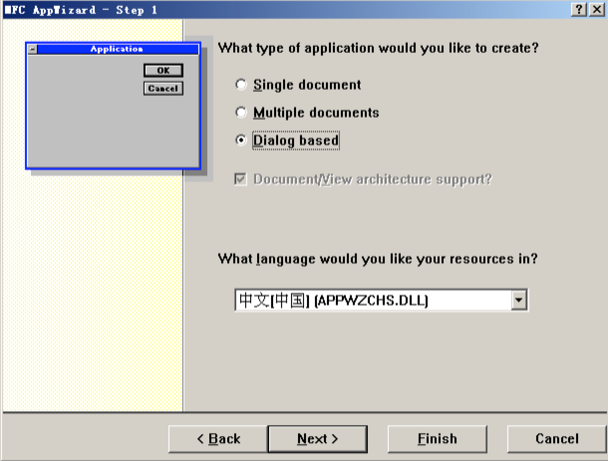
点击Finish然后点击OK：

成功创建MFC项目（MFC画窗口是可视化拖动控件，直接点击右边的Controls然后在窗口中创建对应的控件即可）：
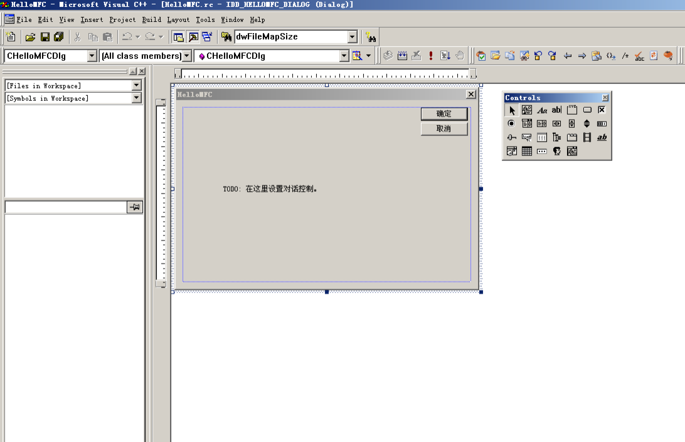
看似这是一个窗口实际上，在其背后已经替我们写了很多的代码：
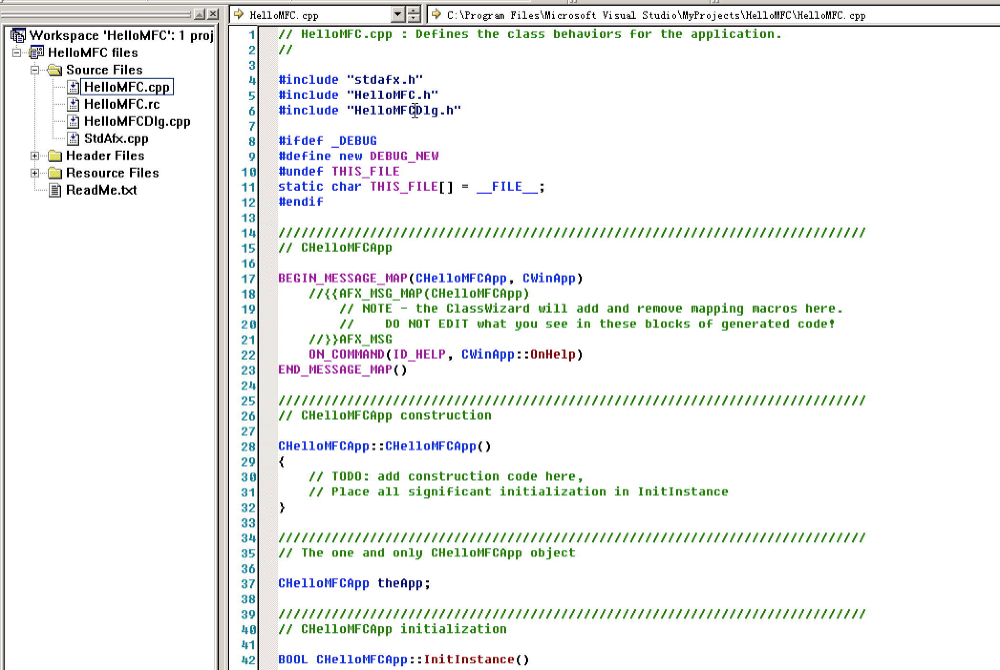
我们可以双击某个控件然后创建控件事件函数：


MFC与WIN32
MFC的本质就是Win32的封装，那么使用MFC实际上会更加方便、效率更高；
其缺点就是根据项目引导生成的代码繁杂冗余，对初学者来说不利用学习和驾驭。
第一个MFC程序
由于根据项目引导生成的代码繁杂冗余，所以我们可以自己来手写MFC来创建Windows窗口程序，这样就可以避免一些不必要的代码。
本节需要掌握的知识点
1、本节必须掌握的知识点：
CWinApp可以覆盖的虚函数 InitInstance
CWinApp成员变量m_pMainWnd
CFramWnd的成员函数create以及参数
2、需要简单了解的内容：
通过MSDN去看MFC的层次结构图
对CWinApp有个初步的认识
对CFramWnd有个初步的认识
MFC的层次结构图
在MSDN Library中搜索hierarchy chart即可获得MFC的层次结构图：
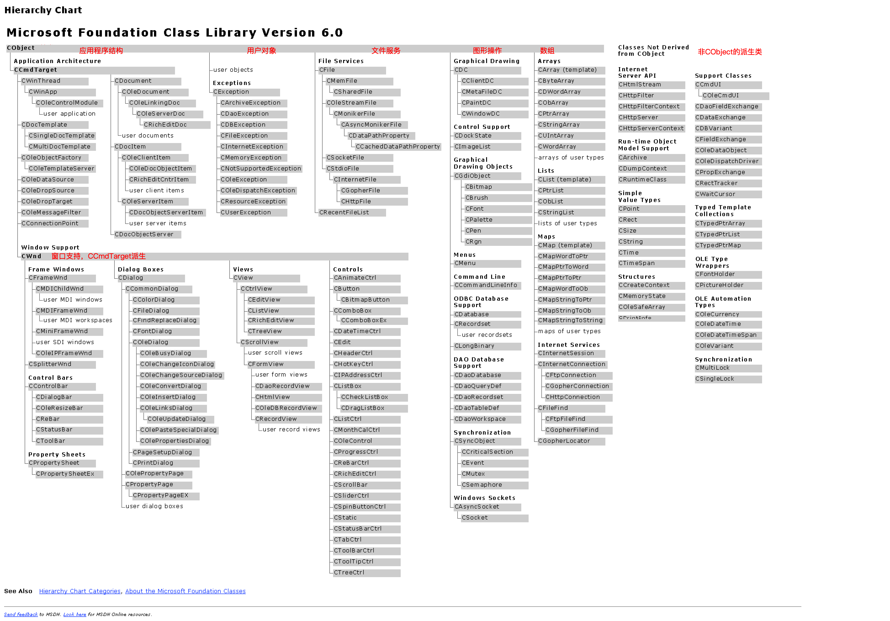
本章我们只需要了解CWinApp、CFramWnd
CWinApp
CWinApp类是Windows应用程序对象基类（父类）的派生类（子类），应用程序对象提供了用于初始化应用程序和运行应用程序的成员函数；使用MFC的每个应用程序只能（也必须）包含一个CWinApp类的派生类（子类）的对象；当你从CWinApp派生应用程序类时，需要覆盖InitInstance成员函数以创建应用程序的主窗口对象；它还有一个成员变量m_pMainWnd用来记录创建的主窗口的对象。

CFrameWnd
CFrameWnd类提供了Windows单文档界面（SDI）重叠或弹出框架窗口的功能，以及用于管理窗口的成员；要为应用程序创建有用的框架窗口，请从CFrameWnd派生类（子类）；向派生类（子类）添加成员变量以存储特定于您的应用程序的数据；在派生类（子类）中实现消息处理程序成员函数和消息映射，以指定在将消息定向到窗口时会发生什么。
有三种方法来构造框架窗口：
1.使用Create直接构造它 （本节需要掌握的内容）
2.使用LoadFrame直接构造它（后续课程讲解）
3.使用文档模板间接构建它 （后续课程讲解）
注：我们可以认为CFrameWnd类取代了窗口过程函数。
Create 成员函数
CFrameWnd :: Create 成员函数语法格式如下：
BOOL Create(LPCTSTR lpszClassName, // 如果类名为NULL，则以MFC内建的窗口类产生一个标准的外框窗口 LPCTSTR lpszWindowName, DWORD dwStyle = WS_OVERLAPPEDWINDOW, const RECT& rect = rectDefault, CWnd* pParentWnd = NULL, // != NULL for popups LPCTSTR lpszMenuName = NULL, DWORD dwExStyle = 0, CCreateContext* pContext = NULL);// 返回值: 非零表示初始化成功，否则为0通过两个步骤构造一个CFrameWnd对象：
首先调用构造函数，它构造CFrameWnd类的对象，然后调用Create成员方法，创建Windows框架窗口并将其附加到CFrameWnd类的对象；
创建初始化窗口的类名和窗口名称，并注册其样式，父级和关联菜单的默认值。
手动编写MFC程序
基于VC6手动编写MFC程序需要注意的事项：
使用Win32 Application去创建项目
项目需要包含MFC运行库，VC6设置：Project → Setting → General → Use MFC In Static Library
使用头文件afxwin.h
头文件：stdafx.h
// stdafx.h : include file for standard system include files,// or project specific include files that are used frequently, but// are changed infrequently//#if !defined(AFX_STDAFX_H__A9DB83DB_A9FD_11D0_BFD1_444553540000__INCLUDED_)#define AFX_STDAFX_H__A9DB83DB_A9FD_11D0_BFD1_444553540000__INCLUDED_#if _MSC_VER > 1000#pragma once#endif // _MSC_VER > 1000#define WIN32_LEAN_AND_MEAN // Exclude rarely-used stuff from Windows headers#include <afxwin.h> // 包含需要的头文件class CMyWinApp:public CWinApp { // 初始化public: virtual BOOL InitInstance();};class CMainWindow:public CFrameWnd { // 初始化public: CMainWindow();};// TODO: reference additional headers your program requires here//{{AFX_INSERT_LOCATION}}// Microsoft Visual C++ will insert additional declarations immediately before the previous line.#endif // !defined(AFX_STDAFX_H__A9DB83DB_A9FD_11D0_BFD1_444553540000__INCLUDED_)源代码：HelloCode.cpp
#include "stdafx.h"CMyWinApp theApp;BOOL CMyWinApp::InitInstance() { m_pMainWnd = new CMainWindow; // 成员变量m_pMainWnd用来记录创建的主窗口的对象 m_pMainWnd -> ShowWindow(m_nCmdShow); // 展示窗口，当调用ShowWindow时，你应该把m_nCmdShow作为一个参数传给它 m_pMainWnd -> UpdateWindow(); // 更新窗口 return TRUE; // 返回值}CMainWindow::CMainWindow() { Create(NULL, TEXT("HELLO MFC")); // Create成员函数创建一个框架窗口，需要注意的是这个函数前两个成员需要我们定义，但是后面的几个成员变量都有其默认参数，我们可以选择不写，第一个参数为NULL它会创建一个默认窗口类}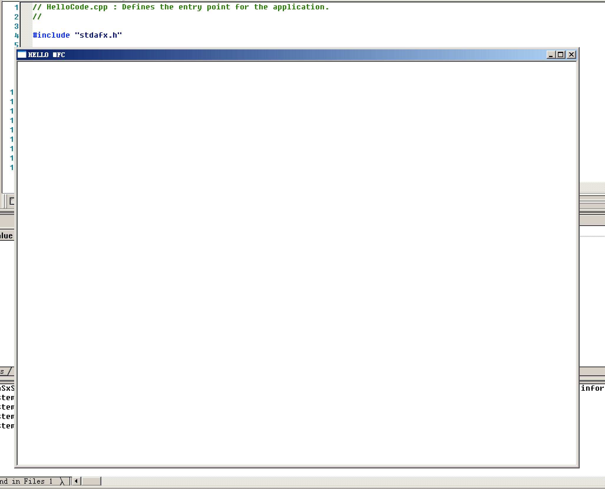
为什么代码里没有WinMain？MFC没有WinMain函数吗？其实MFC是在内部接管了WinMain，我们可以认为CWinApp就是WinMain，只不过我们没法很直观的看见WinMain函数。
总结
基于MFC的窗口程序必须也只能有一个由从CWinApp派生的对象；
我们必须覆盖CWinApp的虚函数InitInstance在里面创建窗口，并把窗口对象保存在它的成员变量m_pMainWnd；
通过CFrameWnd类的派生类（子类）的对象，在它的构造函数里面调用成员函数Create来创建窗口。
课后作业
创建一个带滚动条的，300x300的窗口：
CMainWindow::CMainWindow() { RECT rect = {0, 0, 300, 300}; Create(NULL, TEXT("HELLO MFC"), WS_VSCROLL, rect); // Create成员函数创建一个框架窗口}MFC的初始化过程（一）
本章通过代码来模拟MFC的初始化过程
本节需要掌握的知识点
1、本节必须掌握的知识点
为什么要声明全局的应用程序对象(CWinApp)
学会使用类视图快速添加类
2、需要简单了解的内容
CWinApp的层次结构
CFramWnd的层次结构
代码模拟
用代码模拟MFC的初始化过程，我们基于上一章中手动编写的MFC代码来模拟。
我们继承两个类CWinApp、CFrameWnd，这两个类的层次结构如下：

所以在这里我们需要重写CObject、CCmdTarget、CWinThread、CWnd、CWinApp、CFrameWnd这几个类...
仅仅是模拟代码，不用写实际功能，写上构造、析构函数即可，这里使用VC6的类视图来创建，教程如下所示：
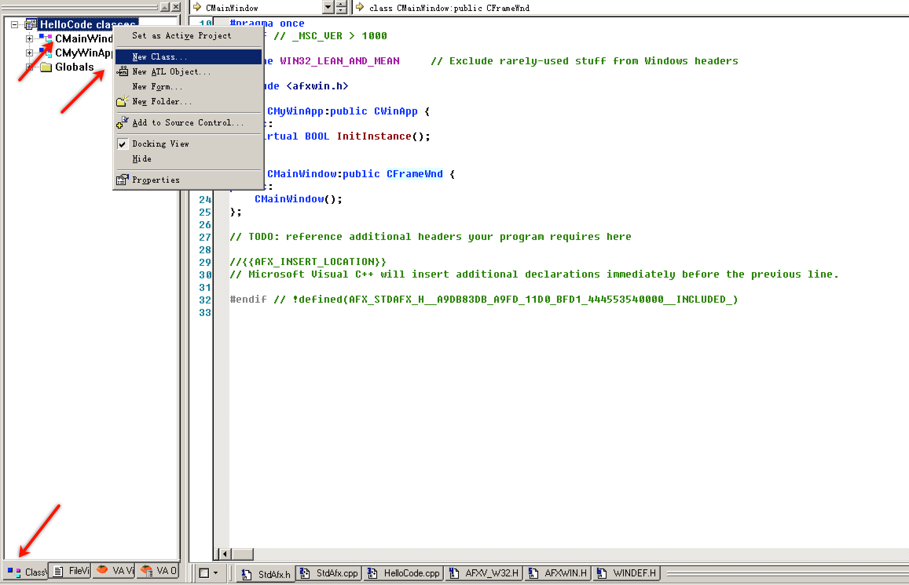
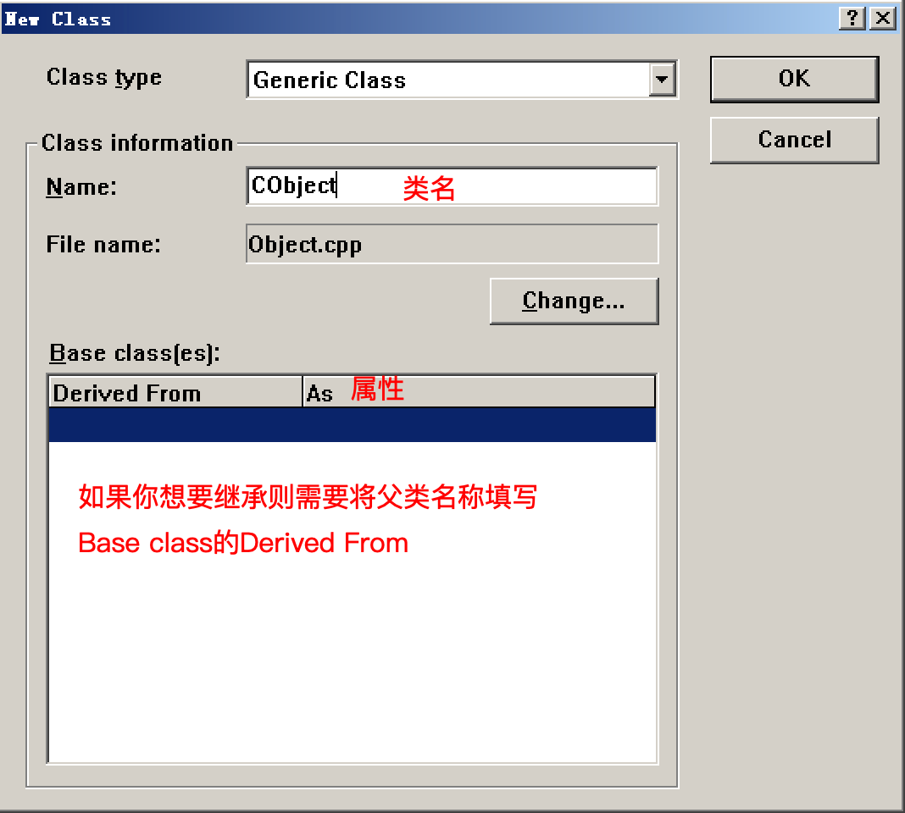
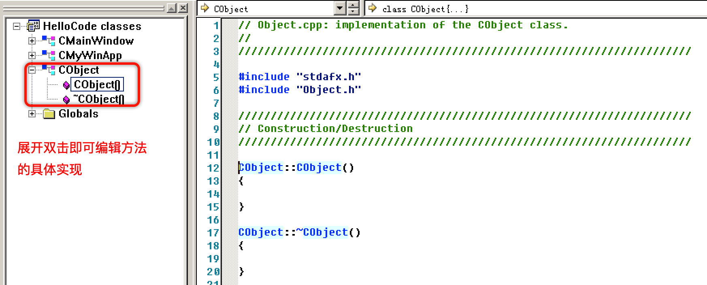
按照这样的层级结构我们创建了这些类，并使用上一章的代码去继承模拟实现一个MFC程序：
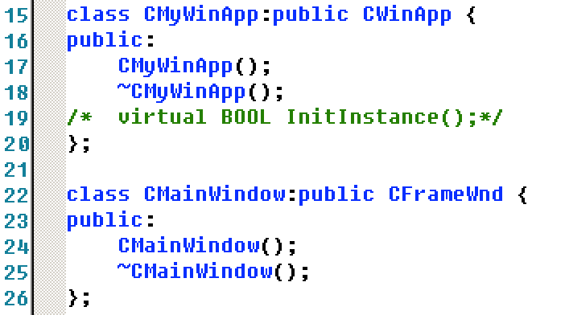


最后执行，我们就可以很清晰的看见执行流程了：
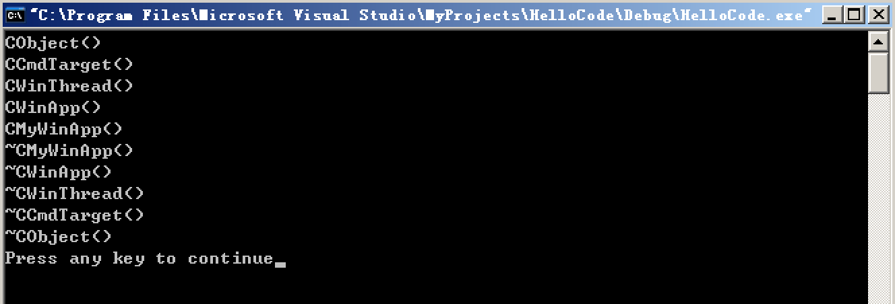
总结
全局对象的建构会比程序入口点更早，所以CWinApp类的对象构造函数将早于WinMain函数，而WinMain函数又广泛使用了应用程序对象，这就是为什么应该程序对象必须做全局声明的原因。
MFC的初始化过程（二）
本节需要掌握的知识点
1、本节必须掌握的知识点
MFC是如何使用应用程序对象
2、需要简单了解的内容
CWinApp类的二个可以覆盖的虚函数
virtual BOOL InitInstance();
virtual int Run();
代码模拟
在上一章节中我们是将InitInstance这个虚函数删除的，在本章中我们可以基于上一章节的代码重新定义一下该虚函数，在原MFC中（这里我们是模拟）这个虚函数在三个类中都存在：
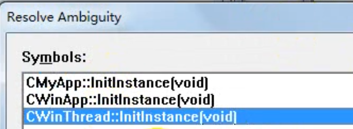
我们已经了解层次结构所以直接在最高一层去定义，也就是CWinThread这个类中去定义即可：
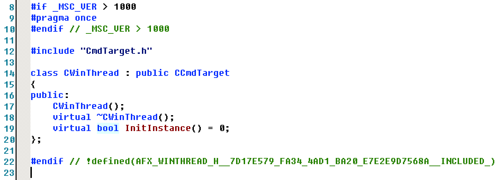
在这我们在当前类中不想具体实现，所以使用纯虚函数去表示，而后在CMyWinApp类中去实现：
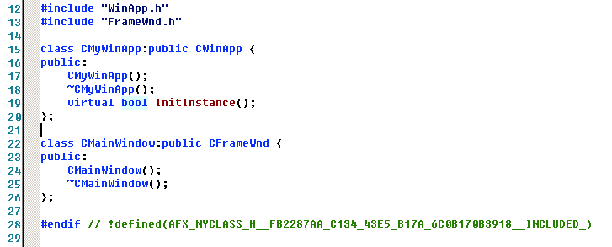
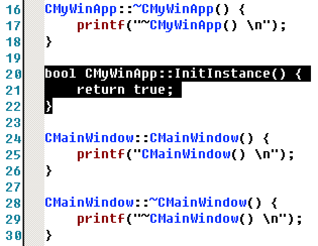
除此之外我们还有一个成员变量m_pMainWnd，这个也是在CWinThread类中定义：
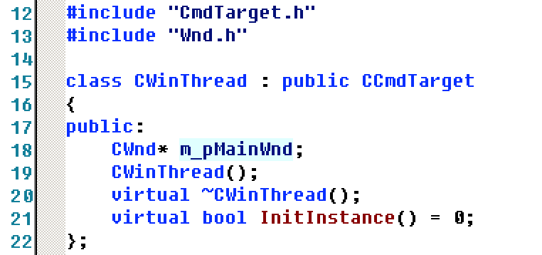
同样我们需要在CMainWindow类中定义Create函数，然后做一个简单的输出即可：
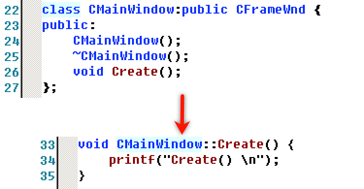
因为需要完美的模拟，所以Create函数需要在构造函数中调用，InitInstance函数需要在main函数中调用（实际上是通过指针去调用的）：
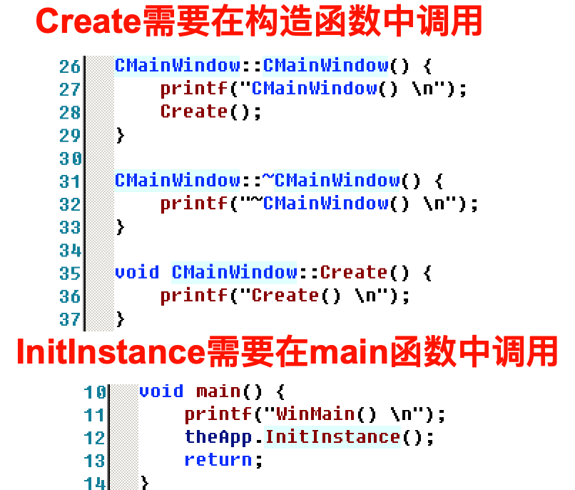
在这里我们一个简化的模拟代码就完成了，执行顺序如下图：

简单理解：CWinApp的Run函数就是用于消息循环的。
MFC运行时类型识别（RTTI）
什么是RTTI
MFC运行时类型识别（英文：Runtime Type Information，缩写：RTTI），能够使用基类（父类）的指针或引用来检查这些指针或引用所指的对象的实际派生类（子类），简单的意思就是它可以帮助我们在程序运行的过程中了解到某个对象所属类。
本节需要掌握的知识点
1、本节必须掌握的知识点
MFC为什么要自己去构建RTTI
关键的宏
DECLARE_DYNAMIC
IMPLEMENT_DYNAMIC
RUNTIME_CLASS
关键的结构体 CRuntimeClass
2、需要简单了解的内容
static关键字的作用
const关键字的作用
C++ RTTI typeid操作符
使用VC6中自带的RTTI
在编译器（VC6）中有自带的RTTI，我们可以在Project-Setting中选择C/C++标签按如下图选择即可：
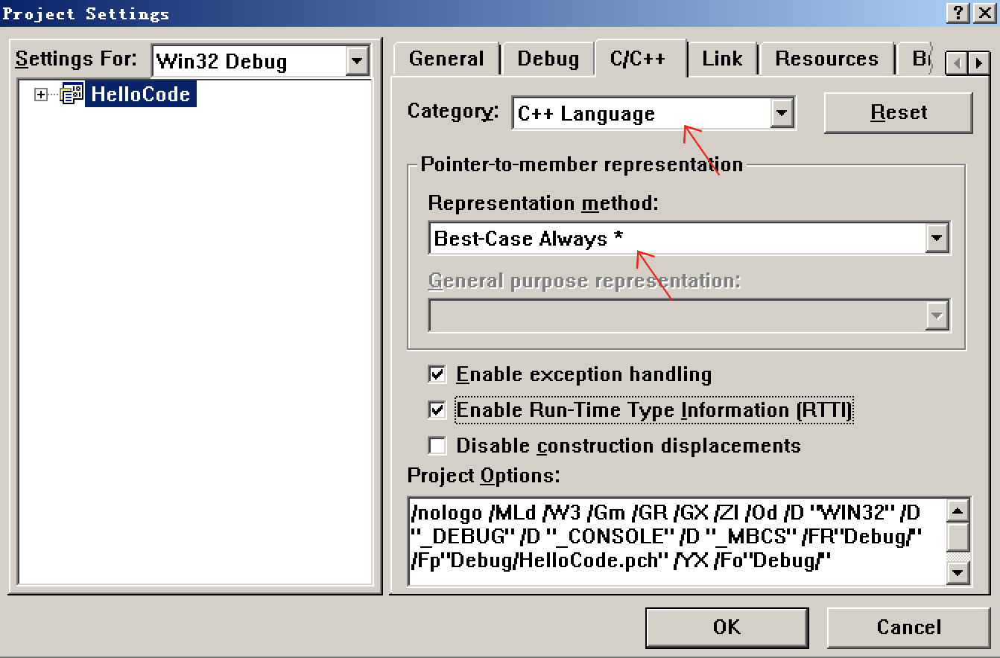
在源代码中我们还需要引入一个头文件typeinfo.h，而后就可以使用typeid这个函数来进行动态识别，该函数只有一个传参，改参数可以为类名或已经创建的对象名。
如下图所示简单用一下typeid，我们定一个了一个类CAnimal并创建了一个对象pAnimal，使用typeid进行比较发现两者都属于同一个类：
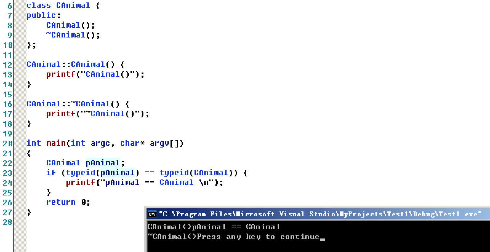
static关键词的作用
static关键词之前课程中也有了解到，这里我们重新温故一下，当用这个关键词定义一个变量，该变量则存储在全局数据区而不是局部的，如果static关键词的变量为某类的成员，则该成员与类进行关联，但并不会与类创建的对象进行关联，也就表示我们不需要创建对象就可以使用这个成员，所以我们想要使用的话就要通过类名::成员名的方式去使用，并且我们不可以在类的内部去赋值初始化，只可以在外部。
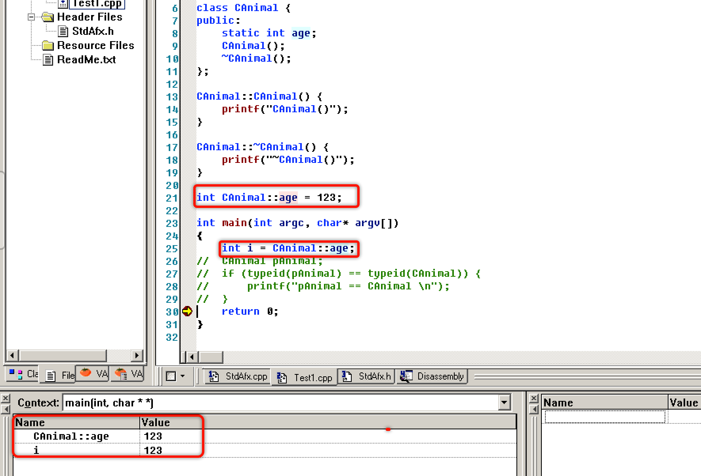
const关键词的作用
使用const关键词定义的成员，同样没办法直接初始化，需要在初始化列表中进行初始化：

跟static不同的是，我们想要使用const关键词的成员时应创建对象后根据对象名来使用：
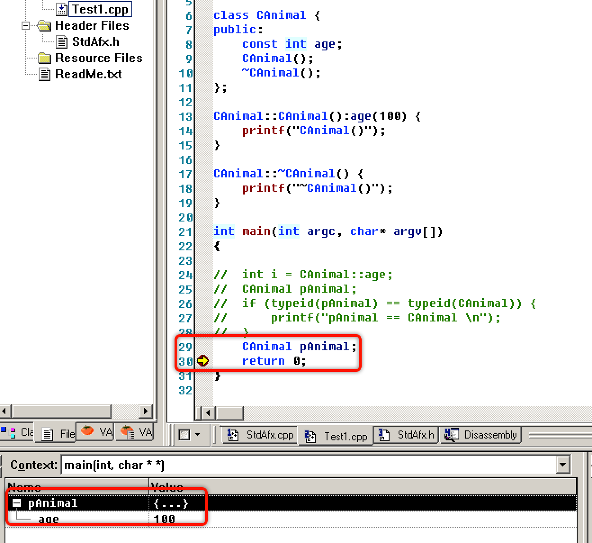
static、const双关键词
如果一个成员使用了static const双关键词，我们还是按照static关键词的方法去使用，但是在初始化的时候需要加上const关键词：

MFC为什么要自己去构建RTTI
在MFC出来的时候C++并没有RTTI这个概念，所以MFC自己设计了这样一套东西，其依靠的就是两个宏：DECLARE_DYNAMIC、IMPLEMENT_DYNAMIC，其中IMPLEMENT_DYNAMIC宏也包含了一个关键的宏RUNTIME_CLASS以及关键结构体CRuntime Class。
使用宏在自己的类中构建
我们要在自己的类中构建RTTI就需要使用这两个宏（注意：宏单独使用的时候，结尾不加分号）：DECLARE_DYNAMIC、IMPLEMENT_DYNAMIC
首先在CWinApp类派生的CMyWinApp类中使用DECLARE_DYNAMIC这个宏（个人理解：声明这个类可以使用RTTI），其用法跟函数是一样的，传参为当前类名：
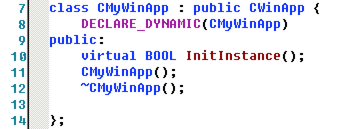
其次在WinMain函数之前使用IMPLEMENT_DYNAMIC宏（个人理解：要在当前使用RTTI，又像建立一个父类和子类的关联），其用法跟函数是一样的，传参为类名、父类名：
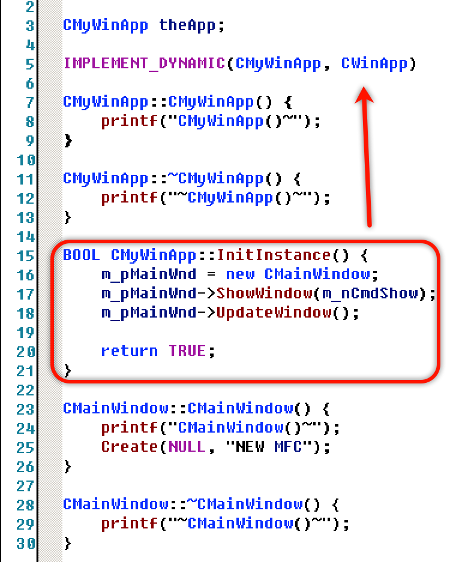
最后使用IsKindOf函数去判断当前是否继承某个类，其语法格式如下所示：
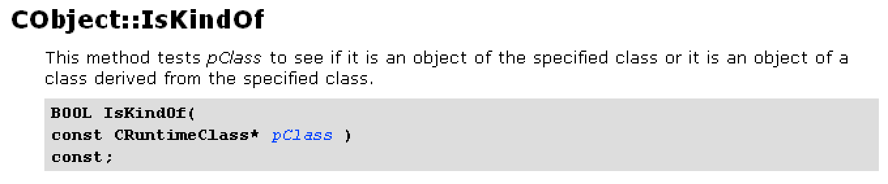
传递的参数使用结构体指针，我们可以通过RUNTIME_CLASS这个宏来返回该格式：

如上图所示我们通过判断当前类是否是基于CWinApp类派生的，不是则返回FALSE。
RUNTIME_CLASS
RUNTIME_CLASS这个宏就是返回处理传入的类名，返回一个CRuntimeClass的指针，其本质我们在VC6中鼠标点击按F12即可看见：

就是 → ((CRuntimeClass*)(&class_name::class##class_name))，其中两个#号则代表拼接符（一个#号则表示转为字符串），也就是说这一段代码可以转换为：
((CRuntimeClass*)(&CWinApp::classCWinApp))所以我们可以在判断中去替换一下使用：
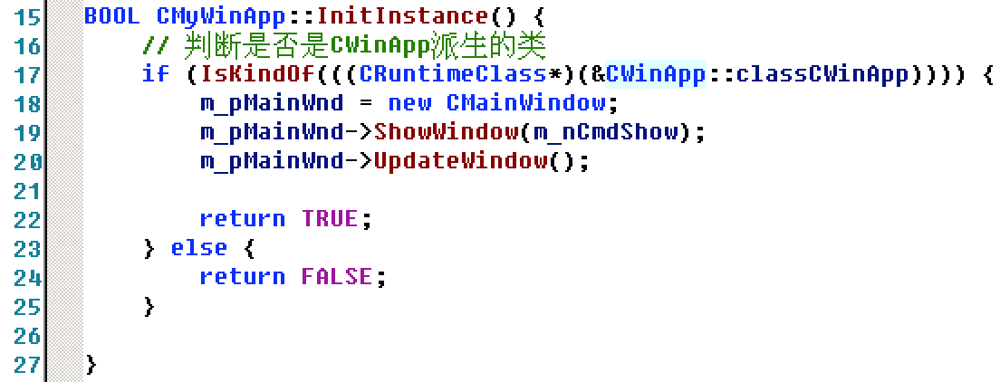
那这个也就很好理解了：这一段就表示返回的是CWinApp类中的classCWinApp的地址然后强转为了CRuntimeClass指针。
因此我们需要来看一下CRuntimeClass这个结构体。
CRuntimeClass结构体
CRuntimeClass结构体，中文名称叫类型记录链表结构，我们可以使用F12跟进看一下定义：
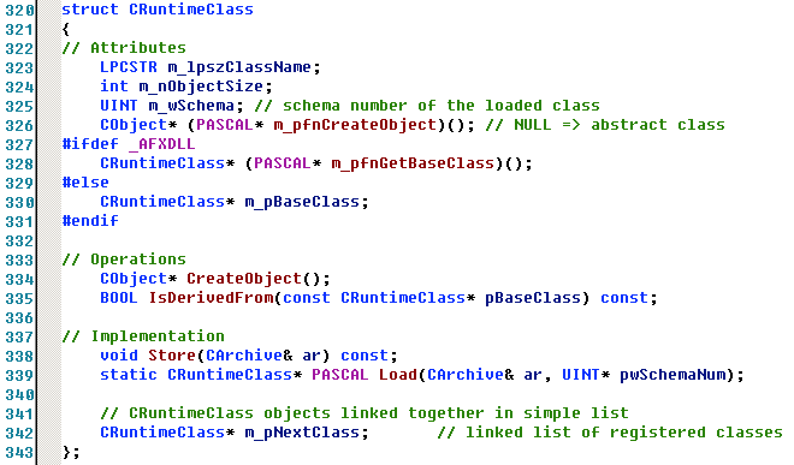
由于这里结构体的内容比较多，我们可以简化一下，整理出本章需要学到的东西：
struct CRuntimeClass{LPCSTR m_lpszClassName; // 类名称int m_nObjectSize; // 类的大小UINT m_wSchema; // 加载类的模式编号...CRuntimeClass* m_pBaseClass; // 父类指针// 判断函数，判断是否父类BOOL IsDerivedFrom(const CRuntimeClass* pBaseClass) const;...CRuntimeClass* m_pNextClass; // 指向下一个CRuntimeClass结构体指针};这个是一个链表结构体，是用于记录类的结构，其中包含了很多类的信息。
转换宏了解本质
我们可以将使用到的几个宏转换为原来的代码然后看一下本质，首先是DECLARE_DYNAMIC：
#define DECLARE_DYNAMIC(class_name) \public: \ static const AFX_DATA CRuntimeClass class##class_name; \ virtual CRuntimeClass* GetRuntimeClass() const; \在代码中改写为：
static const CRuntimeClass classCMyWinApp; // 全局可读的变量，类型记录信息结构体CRuntimeClassvirtual CRuntimeClass* GetRuntimeClass() const; // 最后的const表示对该成员无法更改这里既然定义了一个成员为全局可读的变量，那么就会需要在一个地方进行初始化，而初始化的地方就在IMPLEMENT_DYNAMIC宏中，我们来看下IMPLEMENT_DYNAMIC的背后是什么：
#define IMPLEMENT_DYNAMIC(class_name, base_class_name) \ IMPLEMENT_RUNTIMECLASS(class_name, base_class_name, 0xFFFF, NULL) // 其背后又是一个宏，继续跟进#define IMPLEMENT_RUNTIMECLASS(class_name, base_class_name, wSchema, pfnNew) \ AFX_COMDAT const AFX_DATADEF CRuntimeClass class_name::class##class_name = { \ #class_name, sizeof(class class_name), wSchema, pfnNew, \ RUNTIME_CLASS(base_class_name), NULL }; \ CRuntimeClass* class_name::GetRuntimeClass() const \ { return RUNTIME_CLASS(class_name); } \在代码中改写为：
const CRuntimeClass CMyWinApp::classCMyWinApp = { "CMyWinApp", sizeof(class CMyWinApp), 0xFFFF, NULL, // CRuntimeClass结构体，初始化类信息 ((CRuntimeClass*)(&CWinApp::classCWinApp)), NULL};CRuntimeClass* CMyWinApp::GetRuntimeClass() const { return ((CRuntimeClass*)(&CMyWinApp::classCMyWinApp)); // 返回}整个代码转换下来，流程也清楚了，最后就是IsKindOf函数的原理了，我们可以下断点跟进：
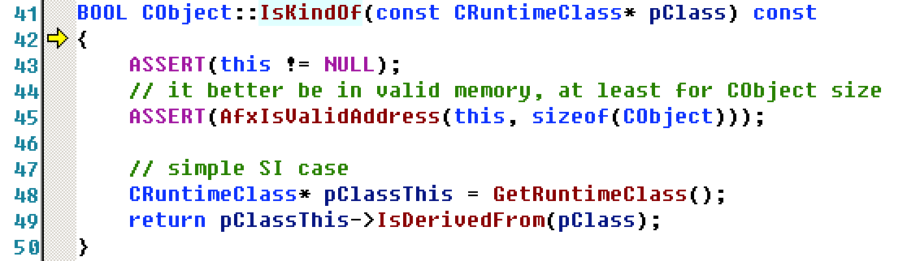
首先是获取类的CRuntimeClass结构体指针，然后根据这个指针调用IsDerivedFrom方法，传递的参数也是一个结构体指针，继续跟进该函数：

前面的可以不用管，都是一些容错代码，进到这个while循环，我们可以很清晰的看见其会判断当前类和传递进来的类是否一样，如果一样则返回TRUE。
课后作业
通过拆分宏，让CMainWindow类也支持RTTI：
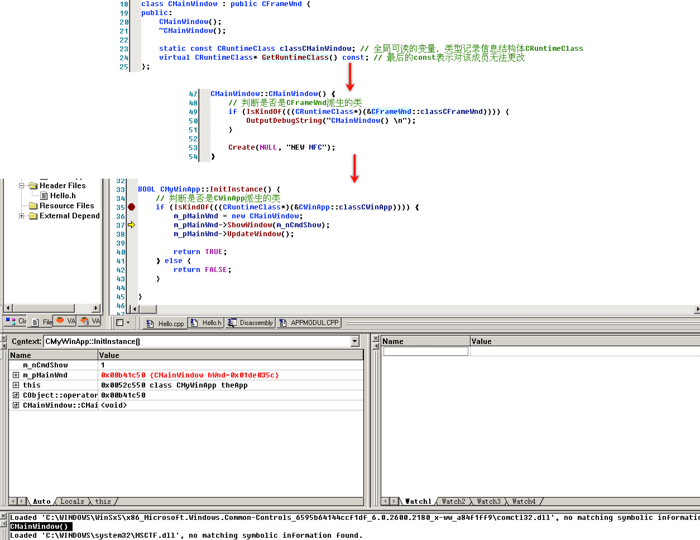
分别自写函数打印出它父类的CRuntimeClass结构体信息：
class CMyWinApp : public CWinApp {private: void PrintCRuntimeClass (CRuntimeClass* className) { char szOutBuff[0x80]; sprintf(szOutBuff, "%s \n", className->m_lpszClassName); OutputDebugString(szOutBuff); CRuntimeClass* baseRuntimeClass = className->m_pBaseClass; if (baseRuntimeClass != NULL) { PrintCRuntimeClass(baseRuntimeClass); } }public: virtual BOOL InitInstance(); CMyWinApp(); ~CMyWinApp(); static const CRuntimeClass classCMyWinApp; // 全局可读的变量，类型记录信息结构体CRuntimeClass virtual CRuntimeClass* GetRuntimeClass() const; // 最后的const表示对该成员无法更改 void RunIt () { CRuntimeClass* thisRuntimeClass = this->GetRuntimeClass(); PrintCRuntimeClass(thisRuntimeClass); }};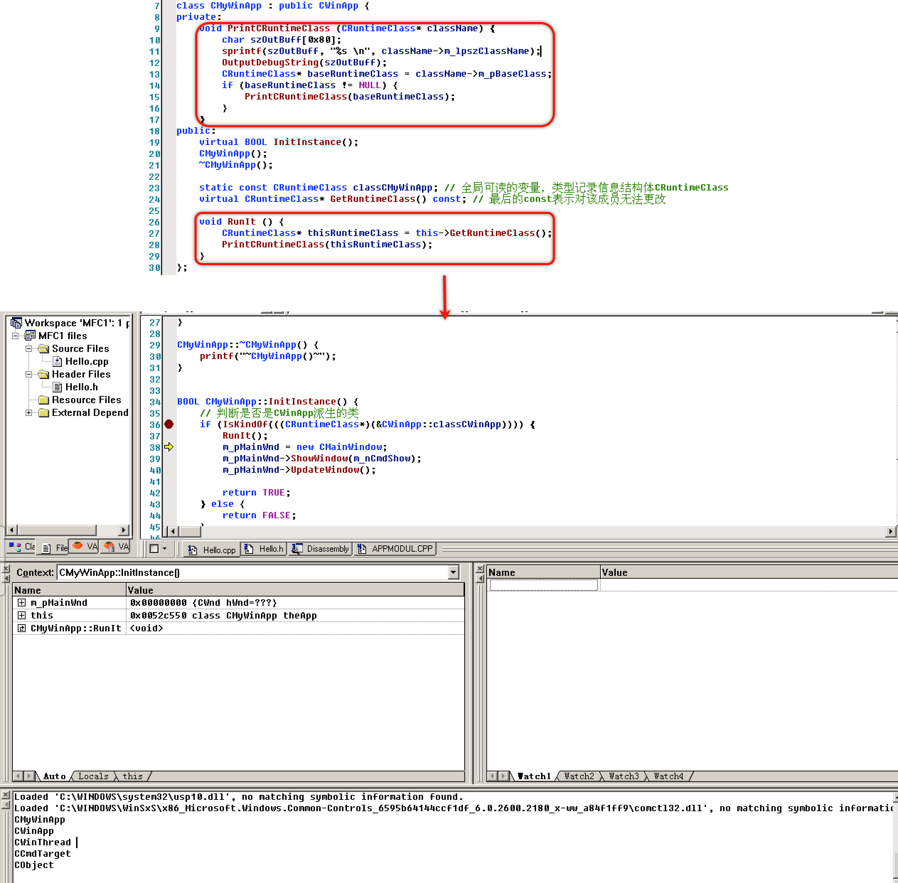
动态创建
关于MFC的动态创建
MFC的动态创建基本和C++的new运算符创建没有区别，但是他弥补了C++语言中不让如下语句执行的缺点：
char* className = "MyClass";CObject* obj = new className;如上代码我们的本意就是创建一个MyClass类的对象，但是C++是无法创建的。
什么时候需要动态创建
MFC有一个永久保存机制，就是将内存中的东西写入到文件中，写入的数据可能是对象中的成员，所以我们需要根据文件中记载的信息去创建对象，才能将写入的数据读取保存。
本节需要掌握的知识点
1、本节必须掌握的知识点
动态创建的作用
二个关键的宏:
DECLARE_DYNCREATE
IMPLEMENT_DYNCREATE
2、需要简单了解的内容
CRuntimeClass::CreateObject（动态创建函数）
//类型记录链表结构struct CRuntimeClass{LPCSTR m_lpszClassName; // 类名称int m_nObjectSize; // 类的大小UINT m_wSchema; // 加载类的模式编号CObject* (PASCAL* m_pfnCreateObject)(); // 函数指针，定义了一个函数指针m_pfnCreateObject用来存放需要支持动态创建类的CreateObject函数m_pBaseClass; // 父类指针CObject* CreateObject(); // 动态创建函数// 判断函数BOOL IsDerivedFrom(const CRuntimeClass* pBaseClass) const; …CRuntimeClass* m_pNextClass; // 指向下一个CRuntimeClass };使用动态创建
我们可以跟进CFramWnd类、CWinApp类来看一下谁支持动态创建，也就是谁使用了相关的宏：
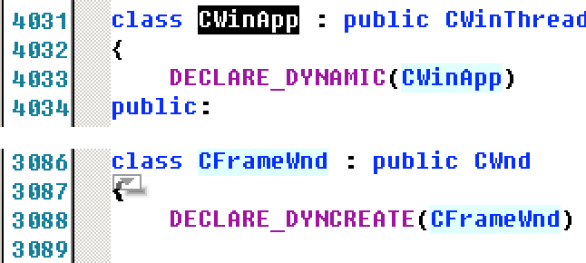
如上图所示我们可以很清晰的看见CFrameWnd类使用了DECLARE_DYNCREATE宏，也就表示其支持动态创建。
所以我们可以在其派生的CMainWindow类也使用动态创建，这里宏的使用和RTTI宏的使用是一样的：

在InitInstance函数中将new运算符替代为动态创建函数CreateObject即可。
转换宏了解本质
与上一章一样，我们将宏转换为其背后的代码来了解其本质。
首先是DECLARE_DYNCREATE宏，其代码为：
#define DECLARE_DYNCREATE(class_name) \ DECLARE_DYNAMIC(class_name) \ // RTTI宏 static CObject* PASCAL CreateObject();#define DECLARE_DYNAMIC(class_name) \public: \ static const AFX_DATA CRuntimeClass class##class_name; \ virtual CRuntimeClass* GetRuntimeClass() const; \如上代码中文名可以看见在该宏中包含了DECLARE_DYNAMIC宏，也就是说动态创建是支持RTTI的，代码中改写：
static const CRuntimeClass classCMainWindow;virtual CRuntimeClass* GetRuntimeClass() const;static CObject* __stdcall CreateObject(); // #define PASCAL __stdcall其实通过这段代码我们就可以知道IMPLEMENT_DYNCREATE宏的作用就是声明classCMainWindow成员变量、GetRuntimeClass成员方法、CreateObject成员方法：
#define IMPLEMENT_DYNCREATE(class_name, base_class_name) \ CObject* PASCAL class_name::CreateObject() \ { return new class_name; } \ IMPLEMENT_RUNTIMECLASS(class_name, base_class_name, 0xFFFF, \ class_name::CreateObject) // 其背后又是一个宏，继续跟进#define IMPLEMENT_RUNTIMECLASS(class_name, base_class_name, wSchema, pfnNew) \ AFX_COMDAT const AFX_DATADEF CRuntimeClass class_name::class##class_name = { \ #class_name, sizeof(class class_name), wSchema, pfnNew, \ RUNTIME_CLASS(base_class_name), NULL }; \ CRuntimeClass* class_name::GetRuntimeClass() const \ { return RUNTIME_CLASS(class_name); } \在代码中改写：
CObject* PASCAL CMainWindow::CreateObject() { return new CMainWindow;}const CRuntimeClass CMainWindow::classCMainWindow = { "CMainWindow", sizeof(class CMainWindow), 0xFFFF, CMainWindow::CreateObject, ((CRuntimeClass*)(&CFrameWnd::classCFrameWnd)), NULL};CRuntimeClass* CMainWindow::GetRuntimeClass() const { return ((CRuntimeClass*)(&CMainWindow::classCMainWindow));}
流程跟进
转换完宏之后在调用CreateObject函数时下断点跟进：

这个就很好理解了就是调用CreateObject函数会判断m_pfnCreateObject（这是一个函数指针存放当前的CreateObject函数的地址），如果不为空则调用这个函数将其返回值给到pObject，最后再返回pObject也就是new CMainWindow。
课后作业
在CMainWindow类里面定义一个函数：CreateObjectByName(char* className);，这个函数就表示通过参数去动态创建对象。
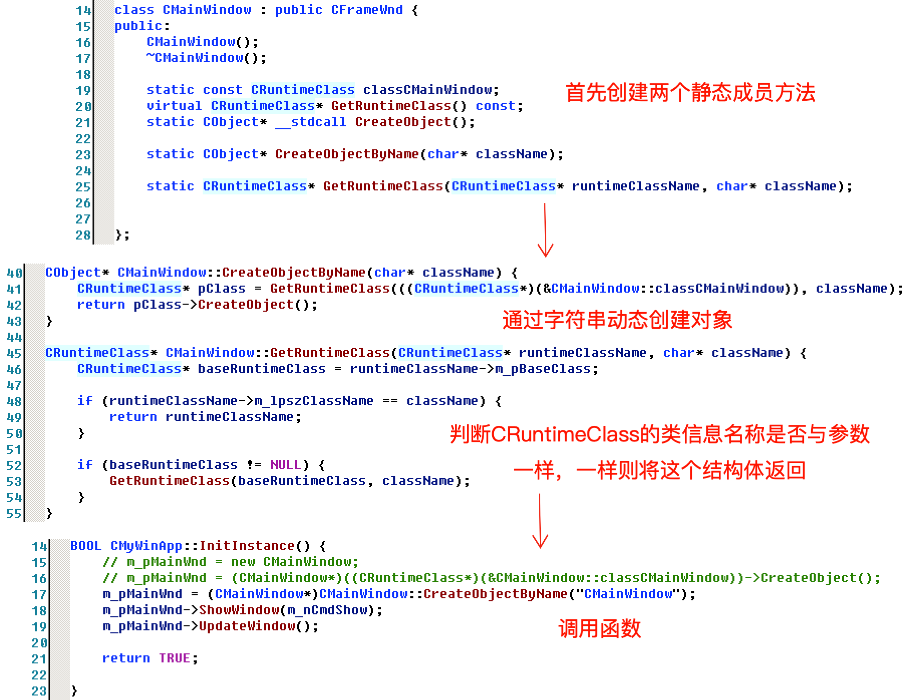
消息映射
什么是消息映射
消息映射是MFC内建的一个消息分派机制，只要利用数个宏以及固定形式的写法（类似于填表格）就可以让我们的框架知道一旦消息发生，该往哪一个类去传递，每一个类只能拥有一个消息映射表格，也可以没有。
本节课需要掌握的知识点
1、本节必须掌握的知识点
三个关键的宏
DECLARE_MESSAGE_MAP
BEGIN_MESSAGE_MAP
END_MESSAGE_MAP
如何添加一个消息
2、需要简单了解的内容
AFX_MSGMAP_ENTRY结构和AFX_MSGMAP
MessageMapFunctions
使用三个关键的宏
之前的学习中我们学了几个带有DECLARE_前缀的宏，就是声明的意思，将它放在类内部即可，所以宏DECLARE_MESSAGE_MAP直接写在类里头（声明里）：

另外两个宏就是实现，BEGIN_MESSAGE_MAP有两个参数分别是当前类、当前类的基类（父类），应该成对出现在类实现外：

假设我们要添加一个鼠标左键按下的消息就需要在这里面去填写：

但是这样我们还需要一个消息处理的函数，这个函数要写在CMainWindow类声明中：
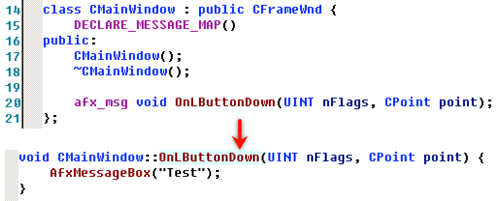
AfxMessageBox函数就是一个弹框，弹框内容为Test，在这里我们允许程序左键按下就会出现弹框：
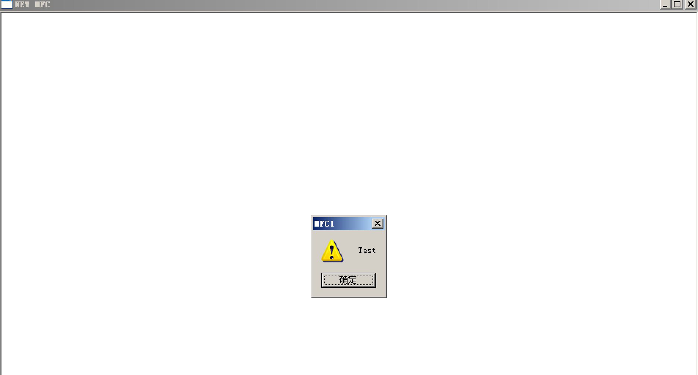
按照这样的格式我们想添加什么消息处理都可以，但是因为是宏，使用简单，但不利于我们去了解基本原理，例如这个左键按下的消息处理函数OnLButtonDown，这个函数名为什么要这样写？不这么写可不可以？所以我们还需要通过转换宏去了解本质。
转换宏了解本质
首先是DECLARE_MESSAGE_MAP宏：
#define DECLARE_MESSAGE_MAP() \private: \ static const AFX_MSGMAP_ENTRY _messageEntries[]; \protected: \ static AFX_DATA const AFX_MSGMAP messageMap; \ virtual const AFX_MSGMAP* GetMessageMap() const; \在代码中改写：
private: static const AFX_MSGMAP_ENTRY _messageEntries[];protected: static const AFX_MSGMAP messageMap; virtual const AFX_MSGMAP* GetMessageMap() const;其次是BEGIN_MESSAGE_MAP、END_MESSAGE_MAP宏（这两个宏是成双结对的所以一起看）和ON_WM_LBUTTONDOWN宏（因为这个宏在它们中间调用）：
#define BEGIN_MESSAGE_MAP(theClass, baseClass) \ const AFX_MSGMAP* theClass::GetMessageMap() const \ { return &theClass::messageMap; } \ AFX_COMDAT AFX_DATADEF const AFX_MSGMAP theClass::messageMap = \ { &baseClass::messageMap, &theClass::_messageEntries[0] }; \ AFX_COMDAT const AFX_MSGMAP_ENTRY theClass::_messageEntries[] = \ { \#define ON_WM_LBUTTONDOWN() \ { WM_LBUTTONDOWN, 0, 0, 0, AfxSig_vwp, \ (AFX_PMSG)(AFX_PMSGW)(void (AFX_MSG_CALL CWnd::*)(UINT, CPoint))&OnLButtonDown },#define END_MESSAGE_MAP() \ // BEGIN_MESSAGE_MAP 和 END_MESSAGE_MAP是要拼接在一块的 {0, 0, 0, 0, AfxSig_end, (AFX_PMSG)0 } \ }; \在代码中改写：
const AFX_MSGMAP* CMainWindow::GetMessageMap() const { return &CMainWindow::messageMap;}const AFX_MSGMAP CMainWindow::messageMap = { &CFrameWnd::messageMap, &CMainWindow::_messageEntries[0]};const AFX_MSGMAP_ENTRY CMainWindow::_messageEntries[] = { { WM_LBUTTONDOWN, 0, 0, 0, AfxSig_vwp, (AFX_PMSG)(AFX_PMSGW)(void (AFX_MSG_CALL CWnd::*)(UINT, CPoint))&OnLButtonDown }, { 0, 0, 0, 0, AfxSig_end, (AFX_PMSG)0 }};如上代码转换完成之后就可以很清晰的知道使用宏的时候鼠标左键按下必须使用OnLButtonDown这个函数名是因为这里是写死在代码中的，没办法改变；我们还可以很清晰的看见_messageEntries这个数组就是存放着我们的消息，这就是一个消息映射的表格，而这个数组是一个结构体数组，所以我们来看一下AFX_MSGMAP_ENTRY这个结构体：
struct AFX_MSGMAP_ENTRY{ UINT nMessage; // windows message Windows 消息类型ID UINT nCode; // control code or WM_NOTIFY code 对于窗口消息该值为0，处理命令消息和控件通知的函数使用与此相同的消息映像。 UINT nID; // control ID (or 0 for windows messages) 命令消息ID的起始范围 UINT nLastID; // used for entries specifying a range of control id's 命令消息ID范围的终点 UINT nSig; // signature type (action) or pointer to message # 消息的动作标识 enum AfxSig 里面的成员 AFX_PMSG pfn; // routine to call (or special value) 响应消息时应执行的函数};根据注释可以非常清晰的看见每个参数的意义，主要说下后两个参数，AFX_PMSG pfn为响应消息时执行的函数，这里也就是OnLButtonDown函数的地址，UINT nSig为消息的动作标识 enum AfxSig 里面的成员，在当前值为AfxSig_vwp，这是一个宏，我们可以跟进查看一下：
它表示着AFX_PMSG pfn（响应消息时执行的函数）的返回值和参数的格式：
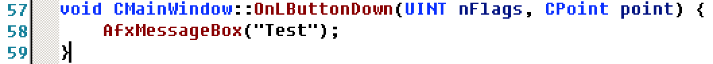
所以在内部就可以通过UINT nSig来进行函数的调用。
在当前我们的UINT nMessage参数为WM_LBUTTONDOWN，这是一个标准消息，除了标准消息在MFC还有其他两类消息。
MFC三大类消息
1.标准消息
任何以WM打头的消息都属于标准消息(除WM_COMMAND)以外
2.WM_COMMAND 命令消息
这是来自菜单、工具条按钮、加速键等用户接口对象的WM_COMMAND通知消息，属于应用程序自己定义的消息。通过消息映射机制，MFC框架把命令按一定的路径分发给多种类型的对象（具备消息处理能力）处理，如文档、窗口、应用程序、文档模板等对象。能处理消息映射的类必须从CCmdTarget类派生。
3.控件通知
通常，控件通知在某些重要事件发生时，由控件窗口发送到父窗口，如打开一个组合框。控件通知为父窗口进一步控制子窗口提供了机会。例如，打开一个组合框时，父窗口可以用组合框初建时得不到的消息填充它。
BN_XXXX是CButton产生的消息，EN_XXXX是CEdit产生的消息，等等。
命令传递
什么是命令传递
消息会按照规定的路线，游走于各个对象之间，直到找到它的消息处理函数；如果找不到，则最终把它交给::DefWindowPro函数去处理。
本节需要掌握的知识点
1、本节必须掌握的知识点
通过单步调试，熟悉窗口过程处理函数在MFC的实现和命令传递的方式
2、需要简单了解的内容
MessageMapFunctions
通过Create函数来看窗口创建流程
之前我们了解过Create函数，其第一个参数（类名）为NULL，则以MFC内建的窗口类产生一个标准的外框窗口，既然它有窗口类那肯定就有窗口过程处理函数，我们需要从这个函数入手下断点去跟进。

首先会判断一个菜单名称：
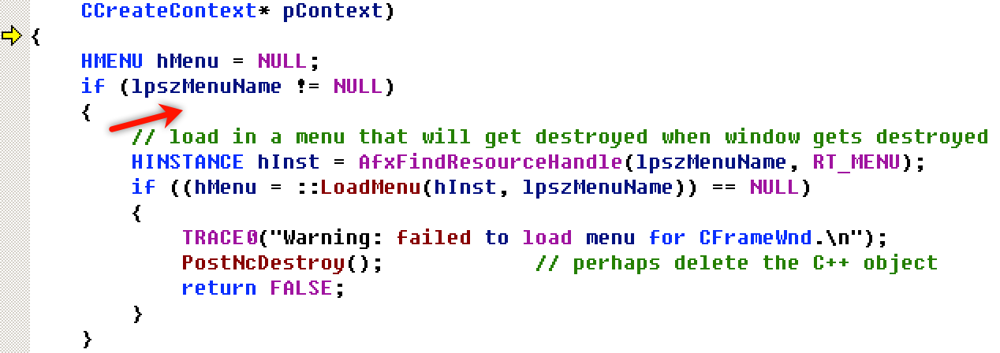
这里我们没有，所以继续向下我们会发现其调用了一个CreateEx函数：
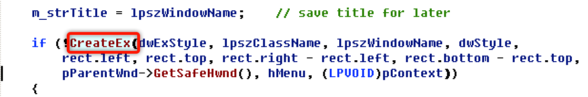
跟进CreateEx函数，其一开始对一些信息进行了填充，这个信息传递给了PreCreateWindow函数：

这边就涉及到一个新的结构体CREATESTRUCT，我们跟进看一下：
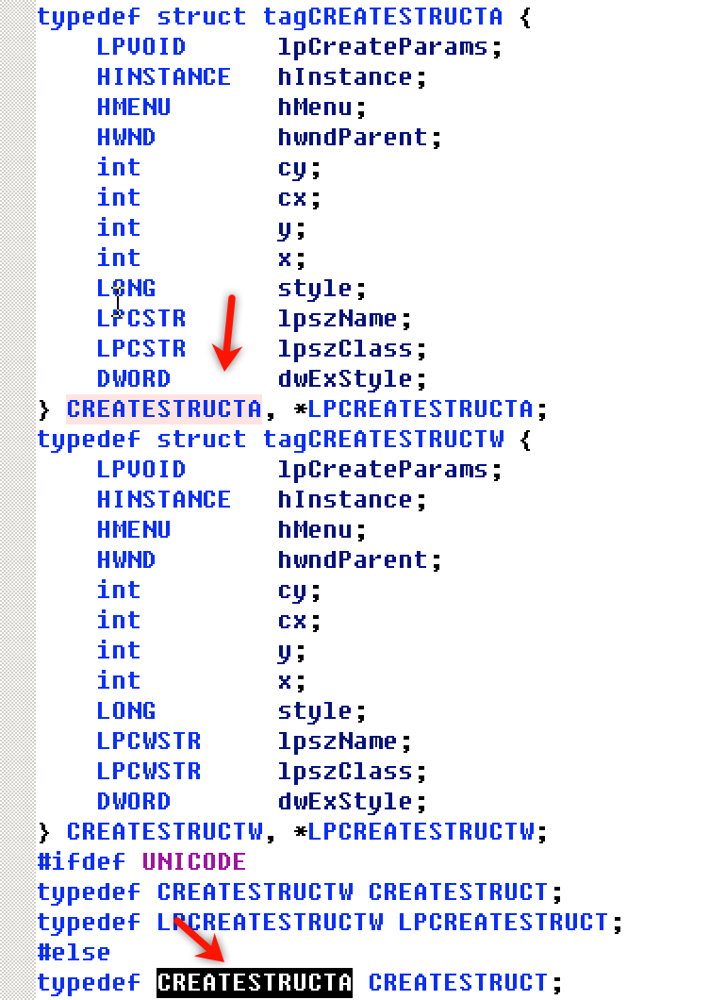
struct tagCREATESTRUCTA { LPVOID lpCreateParams; // 创建参数 HINSTANCE hInstance; // 窗口模块的句柄 HMENU hMenu; // 窗口使用的菜单句柄 HWND hwndParent; // 如果该窗口是一个子窗口，则为父窗口的句柄；如果该窗口是自有的，这个成员标识了所有者窗口；如果该窗口不是一个子窗口或自有窗口，这个成员是NULL。 int cy; // 窗口的高度，单位是像素。 int cx; // 窗口的宽度，单位是像素。 int y; // y坐标，如果窗口是一个子窗口，坐标是相对于父窗口的，否则，坐标是相对于屏幕原点的。 int x; // x坐标 LONG style; // 窗口的样式 LPCSTR lpszName; // 窗口的名称 LPCSTR lpszClass; // 窗口的类名 DWORD dwExStyle; // 扩展窗口样式} CREATESTRUCTA, *LPCREATESTRUCTA;我们继续跟进PreCreateWindow函数，我们可以看见如果窗口名称为空则帮我去注册一个默认的窗口类：

其使用的是AfxDeferRegisterClass，这是一个宏，其背后就是AfxEndDeferRegisterClass这个函数：
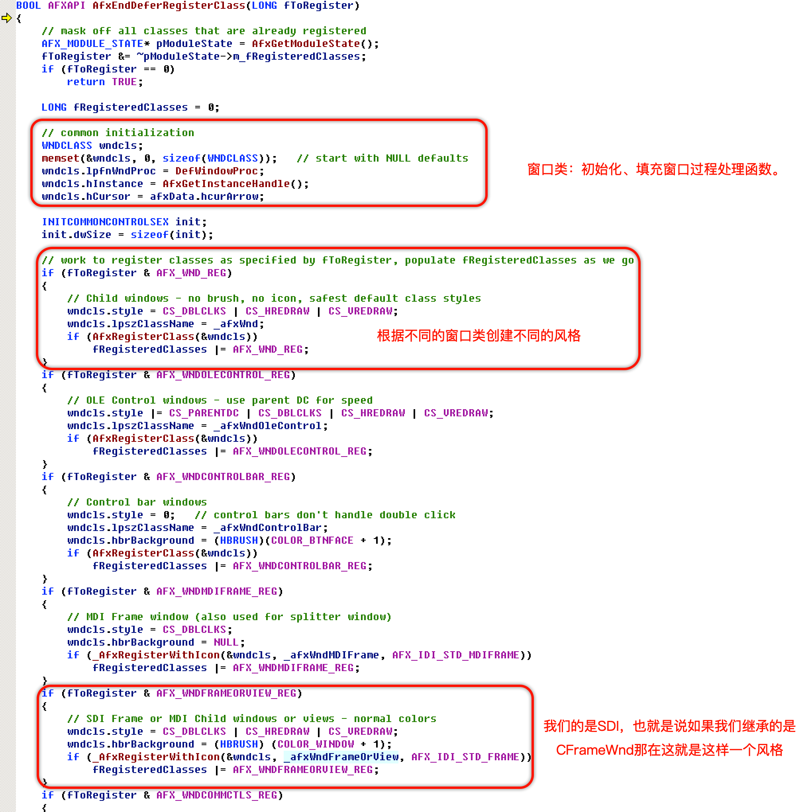
通过阅读代码我们发现这个函数不是我们想要知道其是如何处理消息的函数，继续跟进，跟到CreateEx函数里面会有一个AfxHookWindowCreate函数：
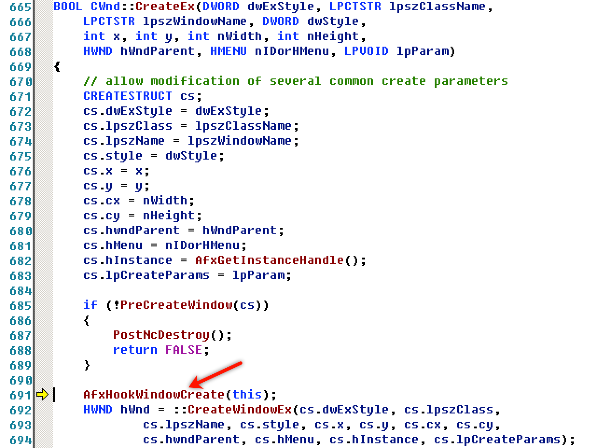
通过这个名字我们就知道什么意思了，其就表示在窗口创建之前挂了一个钩子（HOOK），跟进这个函数：

如上图所示我么久可以看到其挂钩子的函数是SetWindowsHookEx（其第一个参数是WH_CBT，这是一个宏，其就是一个钩子，其表示可以监听窗口激活、产生、释放（关闭）、最小化、最大化或改变；那么在这些事件之前使用的函数就是_AfxCbtFilterHook，也就是第二个参数），相当于安装了一个WH_CBT类型的钩子函数_AfxCbtFilterHook，通过它将默认的窗口过程处理函数替换成了afxWndProc，这一段通过调试是没办法看见的，我们需要去寻找_AfxCbtFilterHook函数的定义，代码很长我们简化一下：
LRESULT CALLBACK_AfxCbtFilterHook(int code, WPARAM wParam, LPARAM lParam){... // subclass the window with standard AfxWndProc WNDPROC afxWndProc = AfxGetAfxWndProc(); oldWndProc = (WNDPROC)SetWindowLong(hWnd, GWL_WNDPROC, (DWORD)afxWndProc);...}我们可以通过命名发现其将老的窗口过程处理函数替换为了afxWndProc，也就是函数AfxGetAfxWndProc，我们继续跟进这段代码：
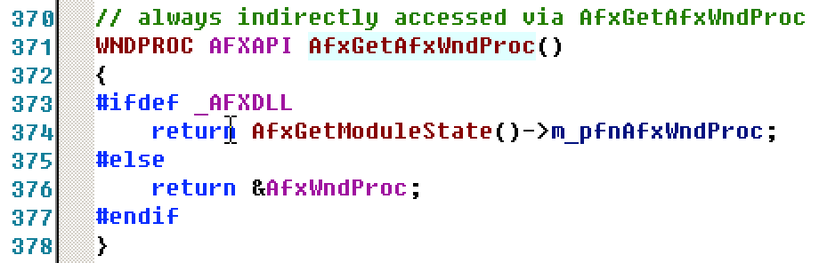
发现其会判断是否定义了_AFXDLL宏，经查阅发现这是判断是否使用了动态链接库，而我们现在使用的是静态链接库，在这自然不存在所以返回的就是AfxWndProc这个函数的地址。
如果你想通过调试去看见这个过程的话，我们就需要借助消息处理函数，例如之前学习的OnLButtonDown函数，在这下断点进行跟进即可（别忘记要左键按下触发事件才能跟进）：
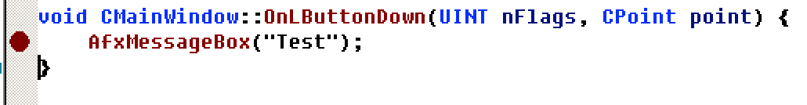
跟着跟着你就发现跟到了AfxWndProc这个函数：
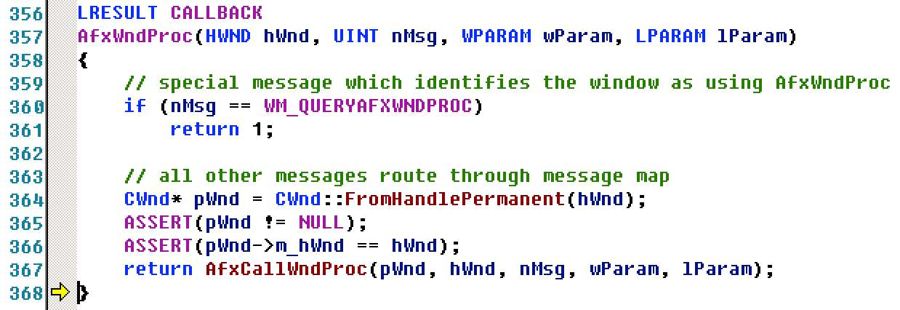
消息处理流程
在OnLButtonDown函数这下断点进行来看一下消息处理的流程。
跟到函数AfxCallWndProc，在如下图所示的位置下断点：
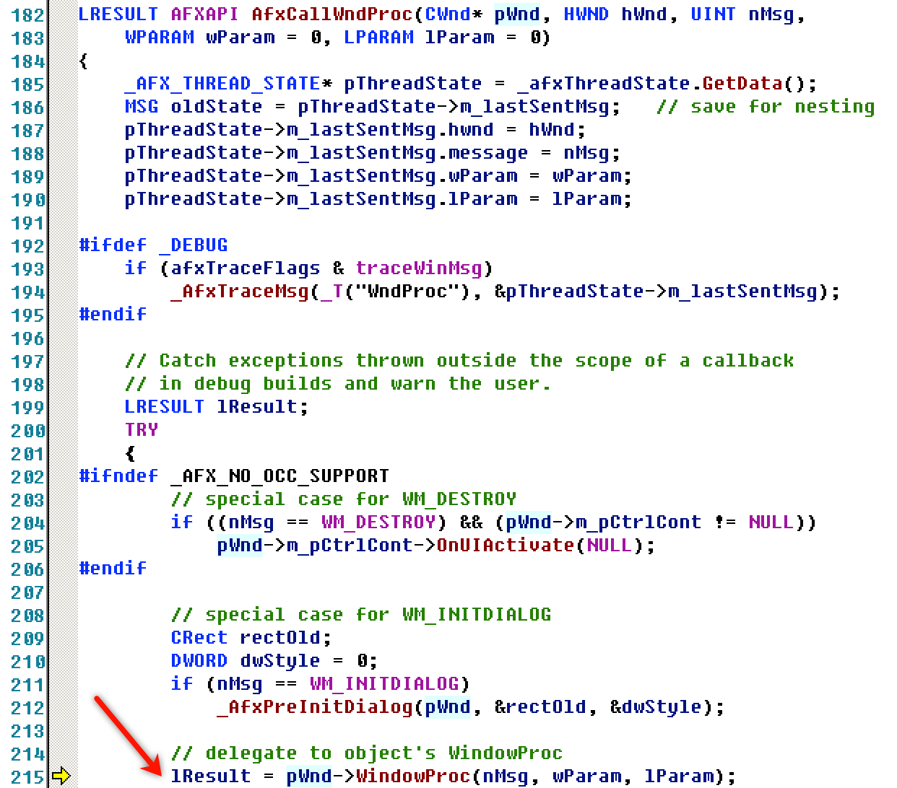
下一个条件断点，当nMsg == 0x0201（#define WM_LBUTTONDOWN 0x0201），也就是当消息类型是左键按下时断点：

下完条件断点之后我们可以重新运行程序：

这时候就会有提示，那就说明断点下成功了，继续跟进代码：
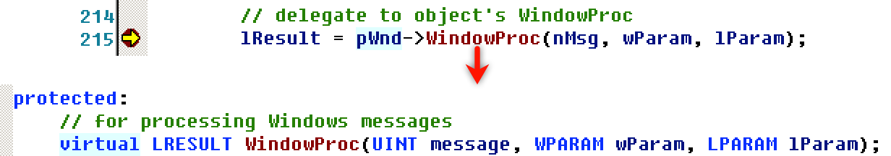
我们可以看见消息是通过WindowProc函数的，这个函数是一个虚函数，也就表示我们可以在类中改写这个函数，但是这里我们没有改写其调用的就是CWnd::WindowProc。

而这里面的OnWndMsg同样也是一个虚函数，我们是可以改写的：
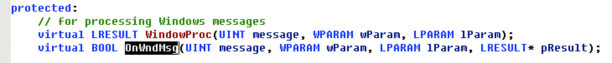
在这里我也没改写，所以进入的就是CWnd::OnWndMsg：
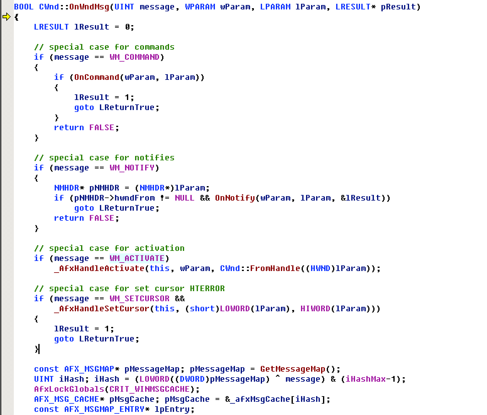
开头几个判断就是判读你的消息类型，当都没有的情况下则表示这是一个标准消息。
其会有一个pMessageMap结构体，这个结构体存储的就是一个消息映射表，我们跟进之后会发现其会不停的基于pBaseMap成员去重新赋值直到没有为止：

继续根据会发现其会通过AfxFindMessageEntry函数在消息映射表中去寻找第一个参数的nMessage与第二个参数message是否一致：

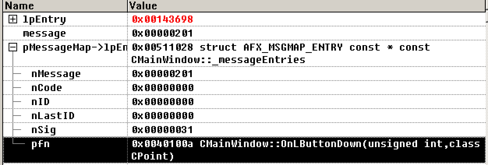
继续跟进代码你会发现MessageMapFunctions结构体，这个表就是告诉我们当前函数（左键按下）是什么返回值、什么参数，然后将pfn（当前函数地址）保存到其成员pfn里：
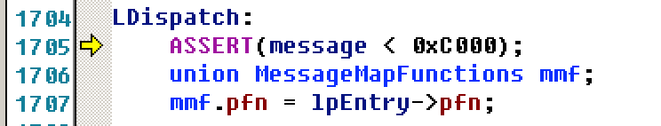
然后通过nSig（消息的动作标识 enum AfxSig 里面的成员）去转换参数：
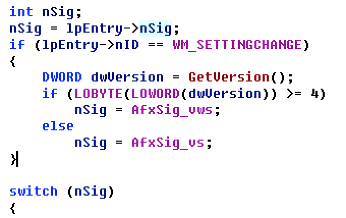
...
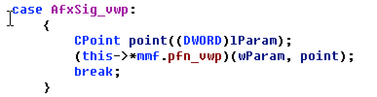
然后通过这样的方式将对应的参数传递给我们的消息处理函数，执行该函数。
MFC源码分析
本节需要掌握的是知识点
1、通过从MFC的AfxWinmain入口函数下断，分析他的大概框架原理
2、CWinApp 取代 WinMain
3、CFrameWnd 取代 WndProc
MFC的WinMain分析
MFC的入口函数是AfxWinMain，其有四个参数都保存在保存在theApp的成员内（如下代码为删减版本）
int AFXAPI AfxWinMain(HINSTANCE hInstance, HINSTANCE hPrevInstance, LPTSTR lpCmdLine, int nCmdShow){ CWinThread* pThread = AfxGetThread(); // 获取当前线程 CWinApp* pApp = AfxGetApp(); // 获取当前实例化的对象 // 实际上其获取到的都是我们的theApp，因为一个进程肯定包含一个线程，所以这里我们可以认为pApp等价于pThread AfxWinInit() // 并在内部调用 AfxInitThread 把消息队列加大 pApp->InitApplication() // 原来的初始化，已经过时，不推荐使用 pThread->InitInstance() // 代替InitApplication，在里面创建窗口 pThread->Run() // 代替Win32的消息循环}我们F12跟进AfxWinMain函数然后下个断点来跟一下：
然后我们重新运行代码跟到断点的地方继续跟进会发现pThread、pApp确实如我们所说是等价的，都是获取的我们实例化的对象：

然后我们进入AfxWinInit函数，跟进发现在该函数内部会在获取一次我们实例化的对象，然后判断是否存在，存在则把入口点的四个参数保存在我们实例化对象的成员里：

所以我们在重写InitInstance函数直接使用m_nCmdShow变量实际上使用的就是自己的成员：
而后继续跟进代码是AfxInitThread函数，该函数就是增加消息队列，初始化线程特别数据（为主线程作了一些初始化工作）：
再回到AfxWinMain函数，接下来就是一个InitApplication函数：
我们之前提到这是MFC原来使用的初始化函数，在现在已经过时了，所以不推荐使用，我们可以忽略，继续跟进：
InitInstance函数就是我们的核心，在该函数内创建窗口，它是一个虚函数，因为我们在CMyWinApp类继承并重写了该函数，现在我们进入的就是我们重写的：
这段代码写了很多遍了，首先我们创建了一个对象，并在CMainWindow类的构造函数中使用Create函数创建了窗口，而后就是一些流程化的东西，最后一个返回为TRUE，这个相信很多人会疑惑，其实在代码中写的就很明确了，如果你不为TRUE，则会异常打印、销毁窗口（如果没有创建窗口则退出实例）：
接下来继续跟进就是Run函数，该函数实现的就是我们Win32里面的消息循环：
这里又调用了CWinThread::Run()，我们继续跟进，在很多书中将该函数称为MFC的控制中心，因为在MFC中所有消息队列、消息分派都在CWinThread::Run()中去完成，它与AfxWinMain一样是对普通程序员来说是不可见的。
其处理流程就是先根据两个标志（空闲标志）去判断当前线程是否是空闲状态，首先在这里我们发现在这里调用并不是GetMessage函数而是PeekMessage函数，该两者区别如下：
相同点：PeekMessage函数与GetMessage函数都用于查看应用程序消息队列，有消息时将队列中的消息派发出去。
不同点：无论应用程序消息队列是否有消息，PeekMessage函数都立即返回，程序得以继续执行后面的语句（无消息则执行其它指令，有消息时一般要将消息派发出去，再执行其它指令）；GetMessage函数只有在消息对立中有消息时返回，队列中无消息就会一直等，直至下一个消息出现时才返回。在等的这段时间，应用程序不能执行任何指令。
而后如果是空闲状态则调用OnIdle函数：
OnIdle函数是一个虚函数，是CWinApp的成员方法，所以我们可以重写该函数以便让我们的程序在空闲状态下做一些操作：
继续跟进发现是一个PumpMessage函数：
在这个函数内就会去使用GetMessage函数去判断有没有消息，由于我们之前是已经判断过了才进的这个函数，所以这里会立即返回：

继续跟进就会发现我们熟悉的消息转换、分发：

再回到Run函数接下里调用的就是IsIdleMessage函数：

至此，我们就分析完Run函数了，其与Win32的消息循环本质没有区别，唯一的区别就是其多了一个空闲状态。
创建在堆上的CMainWindow
分析完Run函数，其实我们还有一个问题没有解决，那就是我们实例化CMainWodw，使用的关键词是new，该关键词是在堆上创建的，而我们不使用需要去释放，否则则会造成安全隐患（内存泄漏），我们在代码中没有去写这类操作，实际上这些都在MFC内部去完成的。
当窗口关闭的时候程序都会调用一个虚函数CMainWodw:PostNcDestroy，这个函数是CFrameWnd的，其默认就是一个delete this：

我们可以在自己的类中去重写一下，在delete之前做一些别的操作：
但需要注意的是如果你继承的不是CFrameWnd而是CWnd，其是没有delete this这样一个操作的，你就需要自己写。
GDI基础概念和MFC的CDC类
本节需要掌握的知识点
对GDI和DC有一定的理解
MFC所封装的三个主要设备描述表
CPaintDC
CClientDC
CWindowDC
基础概念
GDI图形设备接口：Window中负责图形输出的是Graphics Device Interface(图形设备接口)，它为应用程序提供了可调用的多种服务，这些服务一起构成了强大和通用的图形编程语言。
DC设备描述表（设备上下文）：当Window程序在屏幕、打印机或者其它输出设备上画图时，它并不将像素直接输出到设备上，而是将图绘制到设备描述表DC当中，表示逻辑意义上的显示平面，它是Window中的一种数据结构，包含了GDI需要的所有关于显示平面情况的描述。
早期，要开发一个图形软件，我需要知道输出设备的显卡，然后根据厂家提供的不同地接口去编写，所以我们开发软件就会非常困难；在Windows里面通过对驱动程序的统一管理，将设备接口细节隐藏在系统内部，我们不需要去管那么多东西，我们在编写图形软件的时候用一个公用的虚拟设备即可，这个虚拟设备就是DC。
CDC类
MFC的CDC类将DC和HDC（DC的句柄）的GDI函数就近封装到了一起，派生了四个不同场景下的DC类，以下是常用的三个：
CPaintDC：用于在窗口客户区画图，仅限于OnPaint函数内
CClientDC：用于在窗口客户区画图，除了OnPaint外的函数内
CWindowDC：用于在窗口内任意地方画图，抱括非客户区
使用CDC类
Win32 API和MFC的CPaintDC类对比，很明显我们可以看出代码量变得非常少：
如上代码中Win32 API的代码我们使用了双冒号这是因为使用::双冒号指的是从全局调用，如果在Win32这种工程中加与不加影响倒是不大，但在MFC的工程中，默认MFC中的窗口类CWnd其成员函数有很多都是跟Win32 API重名，比如：ShowWindow、GetMessage、GetWindowText等等，所以这时候如果你在CWnd或其派生类中调用了ShowWindow之后，默认调用的就是CWnd的成员函数ShowWindow，如果你想要调用全局的，那么就必须使用双冒号前缀。
我们使用CPaintDC类需要注意：1. 在声明类的时候创建对应的函数 2. 在消息映射区（BEGIN_MESSAGE_MAP宏和END_MESSAGE_MAP宏之前）声明，例如如上的OnPaint函数我就就需要声明ON_WM_PAINT 3. 重写函数

DC设备描述表的一些属性
如下图所示为DC设备描述表的一些属性：
你可以通过设置方法来设置属性，通过获取方法来获取属性：
Windows GDI
本节需要掌握的知识点
理解GDI中的页面空间和设备空间(逻辑坐标和设备坐标)以及映射模式
理解窗口和视口以及对应的原点和范围
理解设备空间的三大坐标系：
客户区域坐标
屏幕坐标
窗口坐标
GDI的映射模式
映射模式是设备描述表的属性，用于确定逻辑坐标值到设备坐标值的转换，传送给CDC输出函数的是逻辑坐标值，设备坐标值是指窗口中相应的像素位置。
调用成员函数CDC::SetMapMod来修改映射模式，我们正常的映射模式是一个像素点，也就是MM_TEXT，其x轴向右，y轴向下，如下图表有很多种映射模式：

|
映射模式 |
一个逻辑单位 |
x和y轴的方向(右，下) |
|
MM_TEXT |
1像素 |
x+ y+ （x向右则是+，y向下则是+） |
|
MM_LOMETRIC |
0.1毫米 |
x+ y- （x向右则是+，y向下则是-） |
|
MM_HIMETRIC |
0.01毫米 |
x+ y- |
|
MM_LOENGLISH |
0.01英寸 |
x+ y- |
|
MM_HIENGLISH |
0.001英寸 |
x+ y- |
|
MM_TWIPS |
1/1440英寸 |
x+ y- |
|
MM_ISOTROPIC |
用户自定义(x,y同等缩放) |
用户自定义 |
|
MM_ANISOTROPIC |
用户自定义(x和y独立缩放) |
用户自定义 |
GDI的坐标空间
Windows下的程序运用坐标空间和转换来对图形输出进行缩放、旋转、平移、斜切和反射；坐标空间是一个平面的空间，通过使用两个互相垂直并且长度相等的轴来定位二维对象。
Win32 API使用四种坐标空间：
世界坐标系空间：在应用程序调用SetWorldTransform函数之前，不会出现世界坐标空间到页面空间的转换
页面空间（窗口）：逻辑坐标与设备无关，在窗口中进行描述时使用逻辑坐标
设备空间（视口）：图形输出时，Windows将GDI函数中指定的逻辑坐标映射为设备坐标
物理设备：屏幕、打印机等
如下图所示，通过将页面空间的原点映射到设备空间的原点，再将设备空间的原点映射到物理设备上，通过一层层的转换才可以通过物理设备看最终显示的结果：
将页面空间转到设备空间，就是通过映射模式，在设备空间里的单位是像素，而在逻辑坐标内则是我们自定义，这取决于映射模式。
修改映射模式
我们来尝试一下修改映射模式，然后画一个圆，首先我们看下正常的映射模式：
选择MM_LOMETRIC，一个逻辑单位是0.1毫米，x向右则加，y向下则减，所以参数最后要改成-300：
因为不同的设备有不同的屏幕，也就造成了像素点不一样的情况，通过指定逻辑单位，我们只需要操作逻辑坐标而不需要去管设备，更换不同的设备依然可以精准的显示我们指定的长度。
用户自定义映射模式
用户自定义的映射模式有：MM_ISOTROPIC、MM_ANISOTROPIC
MM_ISOTROPIC这个映射模式其x、y同等缩放，示例代码：
void CMainWindow::OnPaint() { CPaintDC dc(this); CRect rect; GetClientRect(&rect); // 这个函数将CWnd的客户区的客户坐标拷贝到指向的结构中 dc.SetMapMode(MM_ISOTROPIC); // 设置映射模式 dc.SetWindowExt(100,100); // 设置窗口大小 dc.SetViewportExt(rect.Width(), rect.Height()); // 设置视口大小 dc.Ellipse(0,0,100,100); // 画圆}无论我的窗口有多大都是同等比例去缩放的，并且都是一个正圆形：

MM_ANISOTROPIC这个映射模式其x、y独立缩放，在这个模式下画的圆就会填满整个窗口，x、y也都各自按照各自的来缩放：

GDI的文本和图形输出函数使用逻辑坐标，而在客户区移动或按下鼠标的鼠标位置是采用设备坐标；在我们没有修改映射模式的时候则逻辑坐标与设备坐标等同。
OnLButtonDown函数
我们在OnLButtonDown函数中写一个当鼠标左键按下则画一个圆形的功能：

这里的point实际上就是设备坐标，当我们修改了映射模式为MM_LOMETRIC则就没有办法看见圆形了，我们就需要使用函数DPtoLP来转换：
但是这个这个实际上与我们的功能差了一些，因为模式为MM_LOMETRIC，其x向右则加，y向下则减，所以在代码中的point.y+100需要改成point.y-100。
同理，我们想转换逻辑坐标为设备坐标可以使用函数LPtoDP。
更改原点
我们可以通过SetWindowOrg函数来更改窗口的原点，所以呈现给我们的100,100那一部分实际上就是一个缺失的：

我们想要画一个正常的原就需要在画圆的时候指定坐标：
同样我们可以更改设备空间的原点，使用函数SetViewportOrg：
在这里就是将页面空间的0,0映射到设备空间的100,100，也就表示我们后续画圆从100,100开始也就是从设备空间的200开始。
设备空间下的坐标系
设备空间下的坐标系分为三类：1. 客户区坐标 2. 屏幕坐标 3. 全窗口坐标，如下图所示：
GDI绘图
本节需要掌握的知识点
对GDI的常用绘图函数有一个基本的了解
了解GDI的画笔、画刷以及字体
常用的绘图函数
|
函数名 |
作用 |
|
MoveTo |
在画线前设定当前位置（起始位置） |
|
LineTo |
从当前位置画一条线到指定位置（终止位置） |
|
Polyline |
将一系列点用线段连接起来 |
|
PolylineTo |
从当前位置开始将一系列点用线段连接起来 |
|
Ellipse |
画一个圆或者椭圆 |
|
Rectangle |
画一个带直角的矩形 |
|
FillRect |
用指定的画刷填充矩形 |
|
Draw3dRect |
用来实现3D立体感 |
LineTo函数画线
使用LineTo函数画线需要搭配MoveTo函数，MoveTo函数决定了画一条线的其实位置，LineTo函数则是开始画一条线然后到终止位置，而后如果你想再画一条线实际上就要遵循最后一次LineTo函数终止位置开始画。
void CMainWindow::OnPaint() { CPaintDC dc(this); dc.MoveTo(10,10); // x=10 y=10开始 dc.LineTo(30,10); // 横着画，x增加，y不变 dc.LineTo(30,30); // 竖着画，遵循上一LineTo的x，y坐标为起点，x不变，y增加}
Polyline函数线段连接
Polyline函数就是将一系列点用线段连接起来，其参数就是一个LPPOINT的指针（直接使用数组名就表示是数组首地址，所以我们可以直接使用POINT来定义一个数组传入进去）和一个int类型的参数（这个表示有多少个点，每个点都是基于x, y坐标的）。
如下代码我们可以构建连接点绘制一个正方形：
void CMainWindow::OnPaint() { CPaintDC dc(this); POINT pt[5] = {{40, 40}, {100, 40}, {100, 100}, {40, 100}, {40, 40}}; // 定义数组 x, y dc.Polyline(pt, 5); // 连接成一个正方形，}
有很多人可能会好奇为什么连接4个点需要5组x, y坐标，如下图就是其绘制正方形的流程：
如果你不想这么复杂，我们可以使用PolylineTo函数。
PolylineTo函数线段连接
PolylineTo函数和Polyline函数没有本质区别，唯一的区别其在使用上需要指定一个起始位置，并且不需要5组x, y坐标，只需要4组就可以了。
void CMainWindow::OnPaint() { CPaintDC dc(this); POINT pt[5] = {{100, 40}, {100, 100}, {40, 100}, {40, 40}}; // 定义数组 x, y dc.MoveTo(40, 40); // 指定一个起始位置 dc.PolylineTo(pt, 4); // 连接成一个正方形}
Ellipse函数画圆
Ellipse函数用来画圆，之前也使用到过但是没有仔细讲解其细节，首先我们看下它可以接受的传参：

4个int类型的参数，或者一个LPCRECT类型的参数（这个可以通过CRect来创建，原因如下图所示，LPCRECT本质上就是一个宏，其用于表示RECT指针，而RECT则是tagRECT实例化的对象，CRect又继承于tagRECT，所以我们可以直接使用CRect来创建），而如果你使用CRect创建对象传入的还是四个int类型的参数，其实本质上和直接传入4个int类型的参数没有区别：
四个参数依次都分别表示左、上、右、下，实际上也可以理解为前2个参数为左上角的x, y坐标，后2个参数为右下角的x, y坐标。
例如如下代码，我们指定左上角坐标为：10, 10，指定右下角坐标为：20, 20然后画圆：
void CMainWindow::OnPaint() { CPaintDC dc(this); dc.Ellipse(10,10,20,20);}
其原理如下图所示（个人见解），从10, 10到20, 20画一条直线，而后取中心点，在中心点开始画圆（类似圆规）：
Rectangle函数画直角矩形
Rectangle函数画直角矩形，其参数与Ellipse函数是一样的：

所以使用方法也是一样的，如下代码：
void CMainWindow::OnPaint() { CPaintDC dc(this); dc.Rectangle(10,10,20,20);}
其原理如下图所示（个人见解），10, 10和20, 20就是为了确定位置，另外两个点就是10, 20和20, 10了，这个就可以通过给的对角线的两个点来确定：

FillRect函数指定画刷填充矩形
我们之前画的矩形都没有任何颜色，默认的就是一共跟底色一样的颜色，所以我们可以通过FillRect函数指定画刷来填充矩形。
FillRect函数的语法格式如下所示：
void FillRect(LPCRECT lpRect, CBrush* pBrush)该函数第一个参数为LPCRECT，所以我们Rectangle函数也使用LPCRECT，这样便于使用；第二个参数是一个CBrush类指针，也就是我们的画刷。
如下代码，我们使用亮灰色画刷来填充矩形：
void CMainWindow::OnPaint() { CPaintDC dc(this); CRect rect(10,10,20,20); CBrush brush; dc.Rectangle(rect); brush.CreateStockObject(LTGRAY_BRUSH); // 初始化画刷，LTGRAY_BRUSH -> 亮灰色画刷 dc.FillRect(rect, &brush); // 由于该函数第一个参数为LPCRECT，所以我们Rectangle函数也使用LPCRECT，这样便于使用。}
Draw3dRect函数实现3D立体感
为了让程序看起来更加丰满，我们可以使用Draw3dRect函数实现3D立体感，其第一个参数与Ellipse函数、Rectangle函数一样，可以为四个int类型的参数，也可以是一个LPCRECT，另外两个参数就是3D实体图形左边与上边的颜色和右边和下边的颜色。
如下代码，我们创建一个200x200的矩形，其左边与上边的颜色为绿色，右边和下边的颜色为红色：
void CMainWindow::OnPaint() { CPaintDC dc(this); CRect rect(10,10,200,200); CBrush brush; dc.Rectangle(&rect); brush.CreateStockObject(LTGRAY_BRUSH); // 初始化画刷，LTGRAY_BRUSH -> 亮灰色画刷 dc.FillRect(&rect, &brush); // 由于该函数第一个参数为LPCRECT，所以我们Rectangle函数也使用LPCRECT，这样便于使用。 dc.Draw3dRect(&rect, RGB(255,255,0), RGB(255,0,255));}
注意：这里的rect对象名，如果我们直接写对象名称不要那个取地址符也是可以的，因为这样实际上就是拷贝一份过去，而如果传入指针实际上就是将当前对象的地址传过去，两者唯一区别就是前者拷贝过去的对象被修改了不会影响本身，但后者则会影响本身，前者需要重新开辟一块空间，其实也是一种资源浪费，我们这些代码理论上也不会修改我们的坐标点，所以我们还是直接使用取地址符传指针进去较好。
实现按钮功能
如下代码，我们可以借助3D立体化让我们的矩形看起来像一个按钮，然后在左键按下事件中添加对应的弹框，实现一个简单的按钮单击触发功能：
void CMainWindow::OnPaint() { CPaintDC dc(this); CRect rect(10,10,100,50); CBrush brush; dc.Rectangle(&rect); brush.CreateStockObject(LTGRAY_BRUSH); // 初始化画刷，LTGRAY_BRUSH -> 亮灰色画刷 dc.FillRect(&rect, &brush); // 由于该函数第一个参数为LPCRECT，所以我们Rectangle函数也使用LPCRECT，这样便于使用。 rect.top++; rect.left++; dc.Draw3dRect(&rect, RGB(255,255,255), RGB(128,128,128)); // 3D dc.SetBkMode(TRANSPARENT); // SetBkMode函数来设置DrawText函数的输出方式 /* 显示设备共有两种输出方式：OPAQUE和TRANSPARENT。 OPAQUE是使用当前背景的画刷的颜色输出显示文字的背景 TRANSPARENT是使用透明的输出，也就是文字的背景是不改变的。 */ dc.DrawText("Click", &rect, DT_CENTER|DT_VCENTER|DT_SINGLELINE); // 该函数在指定的矩形里写入格式化的正文 /* DT_CENTER：文本水平居中显示 DT_VCENTER：文本垂直居中显示 DT_SINGLELINE：文本单行显示 */}void CMainWindow::OnLButtonDown(UINT nFlags, CPoint point) { // 判断point的点是否在当前CRect的范围中 if (rect.PtInRect(point)) { dc.Draw3dRect(&rect, RGB(0,0,0), RGB(0,0,0)); // 增加动画效果 AfxMessageBox("Click"); dc.Draw3dRect(&rect, RGB(255,255,255), RGB(128,128,128)); // 复原 }}
使用画刷、画笔、字体
在GDI中我们有画刷（CBrush类）、画笔（CPen类）、字体（CFont类），如上案例中我们使用了画刷来填充矩形，那么假设要改别一个矩形四边的线条，我们可以通过画笔来完成。
画笔（画刷同理可得）
画笔使用CPen类创建，我们可以直接通过构造函数去创建一个画笔：
CPen pen(PS_DASH, 1, RGB(255,0,0));其三个参数分别是画笔样式：虚线、线条宽度：1（注意使用非实线只能使用1）、画笔颜色：红色。
除了构造函数外我们还可以使用成员方法CreatePen来创建画笔：
CPen pen;pen.CreatePen(PS_DASH, 1, RGB(255,0,0))创建画笔并不代表画笔被我们所使用了，要使用的话则需要SelectObject来使用：
当我们使用该函数来设置了画笔，我们还需要保存一个原来的画笔，在使用完之后恢复原画笔（只要你使用了SelectObject方法就一定要保存原内容最后还原），这是因为：
窗口（视图）类，在任何地方（包括基础代码）都能获取DC并调整画笔，你无法确认上次使用的画笔是否被更换了
通常画笔都是使用临时变量CPen，这样在函数执行后，这个画笔会失效，如果不将OldPen放回去，会造成内存泄露（应该释放但因DC绑定而无法释放，下次放弃使用的时候又无法判断是否应该释放）
因为SelectObject方法返回的结果是未被替代前的CPen对象（指针），所以我们可以这样写：
void CMainWindow::OnPaint() { CPaintDC dc(this); CRect rect(10,10,100,50); CPen pen; CPen* oldPen; pen.CreatePen(PS_DASH, 1, RGB(255,0,0)); // 创建画笔，画笔样式为虚线，线条宽度(使用非实线只能使用1)，颜色为红色 oldPen = dc.SelectObject(&pen); dc.Rectangle(&rect); // end dc.SelectObject(oldPen);}TextOut函数输出文本
我们之前使用DrawText函数输出文本，其参数较多，我们可以通过TextOut函数来省略一些参数，但同时我们还需要使用SetTextAlign函数来设置文本对齐：
dc.SetTextAlign(TA_CENTER); // 设置文本对齐dc.TextOut(rect.left, rect.top, "Test"); // x, y, 文字
个人见解：说实话，这样的效果有些差强人意，还需要我们手动去调整，才能在矩形中对齐，所以如果你想在矩形中居中对齐建议使用DrawText函数。
字体
字体使用CFont类创建，我们可以通过其成员方法CreatePointFont去创建一个字体样式：
CFont font;font.CreatePointFont(2000, "Tahoma");其参数分别为字体大小、字体名称。

如果你想字体样式更花哨一点，例如支持斜体之类的，我们可以使用成员方法CreatePointFontIndirect，其参数是一个LOGFONT结构体：
CFont font;LOGFONT lf;memset(&lf, 0, sizeof(lf)); // 初始化，用0填充lf.lfWeight = 120; // 字体大小lf.lfHeight = FW_BOLD; // 字体宽度lf.lfItalic = TRUE; // 字体是否倾斜strcpy(lf.lfFaceName, "Tahoma"); // 字体名称font.CreatePointFontIndirect(&lf);课后作业
画一个Excel表格的UI，有一说一这个课后作业的目标还是很有挑战性的，了解了MFC的一些细节。
代码如下：
void CMainWindow::OnPaint() { CPaintDC dc(this); CBrush brush(RGB(128, 128, 128)); CBrush brushA(RGB(245, 245, 245)); CBrush* oldBrush = dc.SelectObject(&brush); CRect clientRect; GetClientRect(&clientRect); int i = 0; int tabWidth = 100; int tabHeight = 20; CRect tableRect(25,0,125,20); CRect rightTableRect(0, 0, 25, 20); char test[] = "ABCDEFGHIJKLMNOPQRSTUVWXYZ"; // 设置字体 dc.SetBkMode(TRANSPARENT); dc.SetTextAlign(TA_CENTER); // 设置表坐上角 dc.Rectangle(&rightTableRect); dc.Draw3dRect(&rightTableRect, RGB(255,255,255), RGB(0,0,0)); dc.TextOut(rightTableRect.right/2, 1, "\\"); do { // 列、行循环创建 tableRect.top = 0; tableRect.bottom = 20; dc.Rectangle(&tableRect); dc.Draw3dRect(&tableRect, RGB(255,255,255), RGB(0,0,0)); dc.SelectObject(&brush); int x = 0; do { dc.Rectangle(&tableRect); dc.Draw3dRect(&tableRect, RGB(255,255,255), RGB(0,0,0)); tableRect.top += tabHeight; tableRect.bottom += tabHeight; dc.SelectObject(&brushA); x++; } while (clientRect.bottom / x / tabHeight != 0); tableRect.left += tabWidth; tableRect.right += tabWidth; // 写入表头字母 dc.TextOut(75+(i*tabWidth), 1, test[i]); i++; } while (clientRect.right / i / tabWidth != 0); // 行号 for (int b = 1; clientRect.right / b / tabHeight != 0; b++) { rightTableRect.top += tabHeight; rightTableRect.bottom += 25; dc.Rectangle(&rightTableRect); dc.Draw3dRect(&rightTableRect, RGB(255,255,255), RGB(0,0,0)); char c[2]; sprintf(c, "%d", b); dc.TextOut(12, 1+(b*tabHeight), c); } dc.SelectObject(oldBrush);}
鼠标消息
Window有20多种不同的消息用来报告与鼠标有关的输入事件，这些消息分为窗口客户区消息和非客户区消息，通常我们只需要关心客户区消息。
本节需要掌握的知识点
理解客户区鼠标消息和非客户区鼠标消息
客户区鼠标消息
如下表格中就是一些鼠标消息的名称和其对应含义：
|
名称 |
含义 |
|
WM_LBUTTONDOWN |
鼠标左键按下 |
|
WM_LBUTTONUP |
鼠标左键抬起 |
|
WM_LBUTTONDBLCLK |
鼠标左键双击 |
|
WM_MBUTTONDOWN |
鼠标中键被按下 |
|
WM_MBUTTONUP |
鼠标中键抬起 |
|
WM_MBUTTONDBLCLK |
鼠标中键双击 |
|
WM_RBUTTONDOWN |
鼠标右键按下 |
|
… |
.. |
|
WM_MOUSEMOVE |
在窗口客户区移动了光标 |
我们之前就已经使用过鼠标左键按下这个消息了，只要了解鼠标就知道对应的消息是什么了。
鼠标消息也有对应的消息处理函数，这种函数都是固定的名称和参数，其中参数为：UINT nFlags, CPoint point，第二个参数我们已经使用过了，其就是一个设备坐标（视口），第一个参数表示控制键状态，其可以表示：ctrl键按下、鼠标左键按下、鼠标中键按下、鼠标右键按下、shift键按下。
如下图中有其对应解释和相关的宏：
假设现在我们想要在鼠标左键按下的消息处理函数中判断当shift键按下则触发弹框，可以这样写：
void CMainWindow::OnLButtonDown(UINT nFlags, CPoint point) { if (nFlags & MK_SHIFT) { AfxMessageBox("123"); }}非客户区鼠标消息
我们了解了客户区消息之后，就需要了解一下非客户区，非客户区就是如下图所示红框之外的区域就是非客户区，我们这章所使用的实际上是基于窗口的非客户区，也就是紫框和红框中间那一部分：
非客户区鼠标消息处理
非客户区鼠标消息处理其实跟我们之前使用的鼠标消息处理没有本质区别，唯一的就是名字里头多了NC这两个字母（个人理解为非客户区英文Not Client Area的首字母缩写），例如非客户区的鼠标左键相关的宏和函数：
实际使用也没有本质差别：
但需要注意的是，这里我们需要加入一个父类的CFrameWnd::OnNcLButtonDown，这是因为如果不加入的话，当前消息处理函数就没法处理放大、缩小、关闭这些按钮，而会一直触发弹框：
非客户去鼠标消息处理函数的第一个参数可以判断很多东西，例如窗口缩小、放大、关闭按钮之类的都是可以的：
WM_NCHITTEST消息
通过上文图片中的代码注释可以发现这些宏是属于WM_NCHITTEST和MOUSEHOOKSTRUCT的，第二个我们不用管，来看下第一个，从命名上就可以看的出来其是一个消息，其代表的具体消息为：光标移动到窗体或鼠标按下、抬起。
这个消息优先于所有其他的客户区域和非客户区域鼠标消息，Windows应用程序通常把消息传送给DefWindowProc函数，然后Windows用WM_NCHITTEST消息产生与鼠标位置相关的所有其他鼠标消息，通俗的讲就是从消息产生消息。
我们可以来实际使用一下这个消息，首先在消息映射表中加入该消息的映射，其次在类中声明对应消息处理函数，而后实现该函数即可：
我们可以将客户区和非客户区做一个转换以此实现在客户区也可以拖动窗口：
UINT CMainWindow::OnNcHitTest(CPoint point) { UINT ret; // 通过父类获取消息 ret = CFrameWnd::OnNcHitTest(point); // 判断消息是否是客户区，是的话则将该消息转为非客户区消息 if (ret & HTCLIENT) { ret = HTCAPTION; } return ret;}鼠标画线
我们可以先实现一个鼠标画线的需求，要求鼠标左键按下为起点直到鼠标抬起为终点，两点一条直线：
CPoint testPoint; // 定义一个全局的CPoint，用于存放鼠标左键按下时的坐标// 鼠标左键按下的消息处理函数，给全局的CPoint赋值void CMainWindow::OnLButtonDown(UINT nFlags, CPoint point) { testPoint = point;}// 鼠标左键按下抬起的消息处理函数，MoveTo移动起始位置到testPoint的坐标，而后LineTo画线为鼠标左键抬起的位置void CMainWindow::OnLButtonUp(UINT nFlags, CPoint point) { CClientDC dc(this); dc.MoveTo(testPoint.x, testPoint.y); dc.LineTo(point.x, point.y);}正常画是没有问题的，但是我们鼠标按下之后在非客户区抬起，这样就不会有一条直线出现：

因为我们光标已经离开客户区域了，所以说它接收不到鼠标左键抬起的信息，我们可以借助函数SetCapture，该函数的意思就是在属于当前线程的指定窗口里设置鼠标捕获，一旦窗口捕获了鼠标，所有鼠标输入都针对该窗口，无论光标是否在客户区内；同样，对应的一个函数就是ReleaseCapture函数，当你不在需要继续获得鼠标消息就要应该调用它来释放，但在这里你要通过GetCapture来获取当前捕获鼠标信息的窗口的句柄来判断是否是当前窗口的句柄，如果是则释放。
如下为改写后的代码：
CPoint testPoint;void CMainWindow::OnLButtonDown(UINT nFlags, CPoint point) { SetCapture(); testPoint = point;}void CMainWindow::OnLButtonUp(UINT nFlags, CPoint point) { CClientDC dc(this); dc.MoveTo(testPoint.x, testPoint.y); dc.LineTo(point.x, point.y); if (GetCapture() == this) { ReleaseCapture(); }}
键盘消息
Windows通过给拥有输入焦点的窗口发送WM_KEYDOWN和WM_KEYUP消息来报靠按键被按下还是释放事件；这些消息被称为按键消息。除了ALT和F10以外的所有键都产生按下和抬起消息，ALT和F10是系统键，对Windows有特殊意义。
本节需要掌握的知识点
Windows的键盘消息和处理
键盘消息处理函数
键盘消息处理函数的格式一般为如下所示：
afx_msg void On消息名(UINT nChar, UINT nRepCnt, UINT nFlags);其有三个参数，第一个参数表示虚拟键码（就是你键盘某个键对应的代码），第二个参数表示重复数，第三个参数表示通过取位的方式来列出零个和多个标志位。
第三个参数表示标志位，其位数也有相应含义：
|
位数 |
含义 |
|
0-7 |
OEM扫描码 |
|
8 |
扩展键标志 |
|
9-12 |
保留 |
|
14 |
先前状态，先前键被按下为1，抬起为0 |
|
15 |
过渡状态，被按下为0，释放为1 |
前两个参数比较好理解，我们可以写代码来看一下第三个参数，这里我们用到的是WM_KEYDOWN消息：
首先判断按下的键是否是CTRL键，其次左移14位来获取这个值，我们知道第14位获得的是先前状态，先前键被按下为1，抬起为0，我们按一下CTRL键然后抬起看看结果：

结果为0，那我们一直按着CTRL键不抬起在看一下，结果就为1了：
所以我们可以根据这个来判断该键有没有松开。
WM_CHAR消息
之前我们可以了解了键盘消息处理函数的几个参数，第一个参数可以用来获取键盘按下的键，并且使用WM_KEYDOWN消息来使用了，但是这有一个问题，就是通过WM_KEYDOWN消息对应处理函数获取的键只是针对字符键的永远都是大写的：

所以如果对大小写很严谨的话可以使用WM_CHAR消息以及其对应消息处理函数来获取，换而言之，WM_CHAR消息就是专门来处理这种字符键的。

对话框
对话框实际上就是一个窗口，它不仅可以接收消息，而且还可以被移动、关闭和在它的客户区域进行绘图；我们可以把它看成是一个大容器，在它上面能够放置各种各样的控件，使程序支持用户输入的手段更丰富。
本节需要掌握的知识点
对向导生成的对话框工程进行结构分析
了解GDI的画笔、画刷以及字体
向导生成的对话框工程
按如下图所示创建对话框工程即可：
需要注意的是我们生成了工程，其有一个头文件stdafx.h，该文件一定要放在第一行去使用，因为在使用该文件之前的，VC6编译器是不会将其去参与编译的，而是选择忽视掉：
结构分析
实例化对象
首先我们来看下HelloDialog.cpp文件，在这个文件中我们可以看见theApp这么一个熟悉的名字，通过该名字我们就可以知道这个文件实际上就是用来实例化的：
该代码和以前我们写的工程是没有区别的，它的CHelloDialogApp::InitInstance函数就是初始化一个对话框，同样我们可以根据MFC层次结构图看见其与CFrameWnd通用继承于CWnd，换而言之其实两者没有什么区别，无非就是表现出来的形式不一样罢了。

主窗口
主窗口文件是HelloDialogDlg.cpp，在里面我们可以看见熟悉的消息映射以及相关的消息处理函数：
接着向下看就会发现一个注释写着在这里添加额外的初始化代码，也就是CHelloDialogDlg::OnInitDialog函数：

资源脚本
其实在创建完项目的时候就应该感觉到有一个文件非常的显眼，那就是HelloDialog.rc，这个文件从没见过，其表示的是资源脚本文件，有了这个文件我们就可以添加图标、版本信息等等。

在VC6中没法直接打开这个RC文件，但是我们可以在外部使用记事本去打开：
在这里我们就可以很清晰的看见使用的字体，窗口名字之类的信息，当然这些信息我们也可以通过VC6直接去看：
DoDataExchange函数
在主窗口文件中存在一个函数，其名为CHelloDialogDlg::DoDataExchange，这是用来实现动态绑定的，我们可以来举例说明下动态绑定的意思。
首先在VC6中去绘画两个控件：编辑框和按钮（从旁边的Controls拖过去就行），然后我需要单击按钮就可以改变编辑框的内容：
双击新建的这个按钮，随便取你想要的按钮事件处理函数名称然后写对应的代码，如下代码中使用了GetDlgItem函数，该函数是根据控件ID来获取控件的句柄，而后再用其内部方法SetWindowText来改写编辑框的内容，控件ID我们可以点右键选择控件→Properties来获取：
除此之外我们设置编辑框的内容，我们还可以用别的方法也就是动态绑定的思路来修改。
首先点右键选择控件→ClassWizard，按下图操作即可：
而后就可以直接在代码中使用该变量即可用SetWindowText函数来修改编辑框内容：
然后我们回到DoDataExchange函数，代码中多了一个DDX_Control函数，这是这是因为我们刚刚定义的时候Category选择的就是Control类型，其作用就是将我们的IDC_EDIT1控件和m_edit1变量关联起来，这时候我们操作m_edit1就会改变IDC_EDIT1这个控件。
除了可以在定义的时候Category选择为Control类型，我们还可以直接让其成为一个字符串CString类型：

这样我们在代码中就可以直接去赋值修改编辑框内容，但需注意我们在代码之后要加上UpdateData函数才可以生效：
UpdateData函数的参数值为布尔类型，也就是非TRUE即FALSE，为什么这里是FALSE呢，这是因为这个值为FALSE则表示修改编辑框的内容，而值为TRUE则表示将编辑框的内容给到变量。
可以通过通过代码来证明这一点，这个值都是由我们之前创建的m_edit1变量来传递的：
DoModal函数
回到实例化对象的相关CPP文件，来看一下DoModal函数：
该函数就是一个模态对话框，该函数就实现了一个对话框的初始化、呼出对话框以及一个消息循环。
模态对话框的意思：是指在用户想要对对话框以外的应用程序进行操作时，必须首先对该对话框进行响应，如单击【确定】或【取消】按钮之后，将该对话框关闭。
其会返回一个值，也就是这里的确定（IDOK）和取消（IDCANCEL），我们就可以用它来在我们程序出现的时候做一个验证来返回用户确定或取消的结果。
模态对话框有一个特点，当我们调用了一个新的对话框之后，我们是没法再去点击第一个对话框的，只能等新的对话框结束才可以。
如果你想创建一个非模态对话框可以使用我们之前写的CFrameWnd的方式，先执行Create函数然后ShowWindow，但是这样是不行的，因为我们这样创建的是一个局部变量，虽然会创建这个窗口但是函数执行完，栈中就没有这个了：
void CHelloDialogDlg::OnButton1() { CDialog1 cDlg; cDlg.Create(IDD_DIALOG1, this); cDlg.ShowWindow(SW_SHOW);}所以我们需要在堆中创建，使用new关键词就可以了：
void CHelloDialogDlg::OnButton1() { CDialog1* cDlg; cDlg = new CDialog1; cDlg->Create(IDD_DIALOG1, this); cDlg->ShowWindow(SW_SHOW);}需要注意，我们是在堆中创建的，当程序执行完并不会自己删除，所以我们要在代码中去写，这里就写在取消按钮的处理函数内：
void CDialog1::OnCancel() { // TODO: Add extra cleanup here delete this; CDialog::OnCancel();}MFC控件
本节需要掌握的知识点
Button、Edit、Static控件的属性和方法
Windows传统控件
Windows传统控件如下表，其与窗口之间的关系是父子关系，当窗口（父亲）移动，控件（儿子）也会跟随。
|
控件类型 |
WNDCLASS |
MFC对应的类 |
|
按扭 |
"BUTTON" |
CButton |
|
列表 |
"ListBox" |
CListBox |
|
编辑框 |
"EDIT" |
CEdit |
|
组合框 |
"COMBOBOX" |
CCbomboBox |
|
滚动条 |
"SCROLLBAR" |
CScrollBar |
|
静态文本 |
"STATIC" |
CStatic |
Button控件
手动新建一个按钮控件，基于Create函数即可：
我们也可以手动给创建的这个按钮添加一个处理函数（还是那一套流程）：
我们再来看看修改按钮的名称，跟编辑框是一样的使用SetWindowText函数就可以，但是这里我们的m_btn1没法直接用因为它是创建在局部变量里的，我们可以把它放到类的声明里面。
然后就可以直接使用它了：
如果你不想使用这种方式也可以通过GetDlgItem函数来调用。
GetDlgItem(IDC_BUTTON2)->SetWindowText("Changed");按钮控件还有很多方法，比如说你可以通过EnableWindow方法让一个按钮变灰（TRUE就是启用按钮，FALSE就是不启用）：
除了一些方法还可以设置样式，例如你可以设置按钮控件为一个单选框、复选框，这都可以在Create函数中去设置。
Static控件
CStatic控件是一个静态文本，其是MFC中最简单的控件，创建方式跟按钮控件是一样的，所以我们这里为了方便直接使用MFC控件栏区创建即可：
我们可以通过Properties去修改文本内容、样式...
默认情况下静态文本控件是没有处理函数的，但是我们可以自己添加：1.取个新ID 2.在样式里选中Notify 3.双击静态文本创建函数
void CHelloDialogDlg::OnStatic1() { // TODO: Add your control notification handler code here GetDlgItem(IDC_STATIC_1)->SetWindowText("123123123123");}Edit控件
Edit控件就是一个编辑框，与其他控件一样你可以通过Properties去修改样式：

我们可以选中Multiline然后选中Horizontal Scroll、Vertical Scroll，这样就可以让这个编辑框支持多行并且有自动的上下、左右的滚动条：
其他的方法都很常见，但是对编辑框来说，还有当编辑框内容发生改变的处理函数：
当内容发生变化就会触发：

组合框与列表框控件
在了解了那么多控件的使用方法之后，我发现其实很多都是如出一辙，所以接下来的笔记记录不会那么详细。
ComboBox控件
本节需要掌握的知识点
ComboBox控件
ComboBox控件
ComboBox控件也就是组合框，跟其他控件没什么区别，唯一的区别在于它的设置中多了一个Data的标签栏，如下图是使用方法：

其他的属性可以自行去研究，都非常简单。

ListBox控件
本节需要掌握的知识点
ListBox 控件
Menu菜单的添加
CListBox常用风格
ListBox控件就是列表框，如下表是其的常用风格：
|
风格 |
介绍 |
|
LBS_EXTENDEDSEL |
支持多重选择 |
|
LBS_MULTICOLUMN |
指定一个水平滚动的多列列表框， 通过调用 CListBox::SetColumnWidth 来设置每列的宽度 |
|
LBS_MULTIPLESEL |
支持多重选择，列表项的选择状态随着用户对该项单击或双击鼠标而翻转 |
|
LBS_NOTIFY |
当用户单击或双击鼠标时通知父窗口 |
|
LBS_USETABSTOPS |
使列表框在显示列表项时识别并扩展制表符('\t')，默认的制表宽度是32个对话框单位 |
|
LBS_DISABLENOSCROLL |
使列表框在不需要滚动时显示一个禁止的垂直滚动条 |
|
LBS_NOREDRAW |
当选择发生变化时防止列表框被更新，可发送消息改变该风格 |
常用的方法
AddString() // 添加一个字符串选项，放到最后面DeleteString() // 删除指定索引的字符串选项GetCurSel() // 获取当前选中选项的索引，返回值小于0则没有选中SetCursel() // 设置当前索引，如果填写0，那么就是设置第一个选中GetCount() // 获取组合框或者列表框当前的项的个数SetItemData() // 设置指定索引的位置的值GetItemData() // 获取指定索引位置的值InsertString() // 在指定索引处插入字符串GetTopIndex() // 返回组合框或者列表框第一个可见项的下标，相应的也有设置下标的FindString() // 寻找字符串，找到则返回值大于0，并且返回的是寻找到的字符串的下标ListCtrl控件
本节需要掌握的知识点
ListCtrl控件
CListCtrl常用风格
ListCtrl控件是列表视图控件，其常用风格如下表：
|
风格 |
介绍 |
|
LVS_ICON |
为每个选项显示大图标 |
|
LVS_SMALLICON |
为每个选项显示小图标 |
|
LVS_LIST |
显示一列带有小图标的选项 |
|
LVS_REPORT |
显示选项详细资料，并且其会创建一个表头，这也是我们用的最多的一个风格 |
使用ListCtrl
首先我们创建一个关联：
在我们正式使用之前，我们要知道一些扩展样式：
LONG lStyle;lStyle = GetWindowLong(m_list.m_hWnd, GWL_STYLE); // 获取当前窗口样式lStyle &= ~LVS_TYPEMASK; // 清除显示方式位lStyle |= LVS_REPORT; // 设置样式SetWindowLong(m_list.m_hWnd, GWL_STYLE, lStyle); // 设置样式DWORD dwStyle = m_list.GetExtendedStyle(); // 获取原来的一个扩展风格dwStyle |= LVS_EX_FULLROWSELECT; // 选中某行使整行高亮（只适用与report风格的listctrl）dwStyle |= LVS_EX_GRIDLINES; // 网格线（只适用与report风格的listctrl）dwStyle |= LVS_EX_CHECKBOXES; // 在选项前面生成checkbox控件m_list.SetExtendedStyle(dwStyle); // 设置扩展样式我们可以使用这个风格，在OnInitDialog函数中去设置：
因为这是一个Report风格的ListCtrl控件，该风格是有一个表头的，所以我们需要使用InsertColumn函数去添加一个表头（靠左对齐，宽度为60）：
我们可以通过InsertItem函数去添加表格的数据：
在数据开头有这个复选框是因为我们的扩展样式设置了CheckBox。
InsertItem函数最终返回的结果是一个int类型，其表示当前数据的序号，我们可以根据这个返回值使用SetItemText函数去修改对应的数据：

如上图我们可以得知，InsertItem函数实际上插入的数据就是一行，而其第一个参数0则表示在第1行的第1列添加一个数据，所以我们使用SetItemText函数根据对应返回值去添加数据则可以选择添加其他列的数据。
所以，我们添加数据的时候先应该有InsertItem函数，而后再是SetItemText函数。
同样，我们也可以通过GetItemText函数去获取数据，如下图所示就是获取第2行的第2列的数据：
那么在这里我们使用了CheckBox的扩展样式，我们要获取这复选框有没有被选中怎么办？这时候就可以通过函数GetCheck来获取：
该函数返回值就是选中为1，没选中则为0，参数也就表示获取第几个复选框的选中状态。
我们可以在Resource里添加一个图标，然后在数据开头添加这个图标上去：
添加右键菜单
我们可以基于表格添加一个右键菜单，首先是创建控件、添加选项：
其次可以添加右击事件显示菜单：

TreeCtrl控件
本节需要掌握的知识点
树形视图控件TreeCtrl
CTreeList常用风格
|
风格 |
介绍 |
|
TVS_HASLINES |
添加线段，将子项目和其父项目连接起来 |
|
TVS_LINESTROOT |
添加线段，将分层结构的顶层或者称为根的项目连接起来，只有指定了TVS_HASLINES，此样式才有效果 |
|
TVS_HASBUTTONS |
给具有子项目的项目添加带有加号或者减号的按钮，单击该按扭可以展开和折叠相关子树 |
|
TVS_EDITLABELS |
使置换式标签编辑通知有效 |
|
TVS_DISABLEDRAGDROP |
使拖放无效 |
|
TVS_SHOWSELALWAY |
指定当前选中的项目总是被加亮，默认下失去输入焦点时加亮显示会被取消 |
使用TreeCtrl
老规矩，我们还是添加一个关联参数：
然后新建一个按钮来其来使用一些常见的函数；通过InsertItem函数我们可以添加节点（该方法重载的有很多种，查询MSDN Library即可）：
我们先用InsertItem函数添加一个父节点，然后根据这个函数返回的句柄去创建子节点：
如果你想支持节点自动排序的话可以使用样式TVI_SORT：

同理，如果你想在子节点下面再创建子节点，你就可将当前子节点作为父节点去创建子节点：
既然可以创建节点，我们还可以去获取节点，例如我可以去获取一个父节点，也就是最顶层的那个节点。
我们需要使用的是GetRootItem函数，其返回值为一个句柄，我们可以通过该句柄去获取对应节点的信息，例如节点名字：

在有多个父节点的情况下，默认是获取第一个，也就是最上面那个：
如果你想获取其他的父节点，可以在此基础上使用函数GetNextSiblingItem：
同理，你想获取父节点的子节点就可以使用GetChildItem函数：
但是这样就会存在缺点，所以我们可以写个循环去遍历获取，这里完全可以根据GetNextSiblingItem函数、GetChildItem函数两者的返回值去循环判断遍历：

MFC文件和资源操作
本节需要掌握的知识点
学习MFC的CFile类
学习MFC资源打包和输出的方法
CFile类打开文件
打开文件的方法
构造一个没有初始化的CFile对象，对象调用CFile::Open函数；
用CFile的构造函数打开文件；
如果要创建一个新的文件，而不是打开一个现存文件，则需要在CFile::Open函数或者CFile的构造函数的第二个参数包含一个CFile::modeCreate标志。
实际使用
在当前工程目录下创建一个1.txt文件，然后在代码中写：

如果你想去打开一个文件，其存在就正常打开，不存在就创建的时候可以按如下图去写：
当然，你创建一个新的文件肯定不能就结束了，是要写东西进去的，可以使用Write函数去写入：
如果你想在这个写入之后跟着去填写的话直接使用Write函数是会被覆盖的，我们需要使用SeekToEnd函数将写入位置指向文件末尾然后再使用Write函数，最后记得要关闭这个文件：
当然了，在这里我们的是局部变量，你可以不使用Close函数去释放这个，这是因为在当前函数执行完之后析构函数会帮我们释放，而如果你是在堆中去创建的话就一定要手动的去写。
CFile还有很多属性，就不一一去举例了，可以参考如下表格去使用：
|
属性 |
含义 |
|
CFile::modeCreate |
构造新文件，如果文件存在，则长度变为0 |
|
CFile::modeNoTruncate |
该属性和modeCreate联合使用，可以达到如下效果：如果文件存在，则不会将文件的长度置为0，如果不存在，则会由modeCreate属性来创建一个新文件。 |
|
CFile::modeRead |
以只读方式打开文件 |
|
CFile::modeWrite |
以写方式打开文件 |
|
CFile::modeReadWrite |
以读、写方式打开文件 |
|
CFile::modeNoInherit |
阻止文件被子进程继承 |
|
CFile::shareDenyNone |
不禁止其它进程读写访问文件，但如果文件已经被其它进程以兼容模式打开，则创建文件失败。 |
|
CFile::shareDenyRead |
打开文件，禁止其它进程件 |
|
CFile::shareDenyWrite |
打开文件，禁止其它进程写此文件 |
|
CFile::shareExclusive |
以独占模式打开文件，禁止其它进程对文件的读写，如果文件已经被其它模式打开读写（即使是当前进程），则构造失败。 |
|
CFile::shareCompat |
此模式在32位MFC中无效，此模式在使用CFile::Open时被映射为CFile::ShareExclusive。 |
|
CFile::typeText |
对回车、换行设置特殊进程（仅用于派生类） |
|
CFile::typeBinary |
设置二进制模式（仅用于派生类） |
资源操作
MFC的资源就是我们之前所说的存储一些图片、图标、信息的...我们可以去查找资源、获取资源的大小、加载资源。
首先我们可以基于VC6添加一个TXT文件到资源列表中，按如下图操作：
接下来我们就可以查找资源、获取资源、加载资源、读取数据：
void CHelloComboBoxDlg::OnButton1() { // 查找资源 // 第二个参数需要填写资源名称，这个是由MAKEINTRESOURCE(Id)去获取的，Id就是我们的资源ID // 第三个参数是资源类型，就输入我们刚刚自定义的资源类型 HRSRC hrSrc = FindResource(NULL, MAKEINTRESOURCE(IDR_TXT1), "TXT"); // 返回一个句柄 // 获取资源大小 int rSize = SizeofResource(NULL, hrSrc); // 加载资源 HGLOBAL hMap = LoadResource(NULL, hrSrc); // 读取数据 CFile cf; cf.Open("new.txt", CFile::modeCreate|CFile::modeWrite); cf.Write(hMap, rSize); cf.Close();}
同理，我们也可以加载EXE文件，然后去读取释放。
MFC多页面设计
本节需要掌握的知识点
学习MFC的CTabCtrl类和多页面的设计方式
使用TabCtrl
还是老样子直接在VC6中拖拽创建控件：

可以去选择设置自己想要的风格样式，这里也不多说了；我们继续创建一个关联变量：
我们可以通过InsertItem函数去添加标签：
这里我们可以在初始化函数里去创建：
如下图所示是我们的运行结果，这也就说明了我们MFC多页面的设计也是基于这个标签页：
但是现在我们这是创建好了标签页，实际上里面还没有任何东西，我们可以现在资源中区创建几个对话框，并且为其创建窗口类：
然后在类中去声明我们的三个Page成员：
接下来我们就可以去使用Create、ShowWindow函数创建窗口了，但是仅仅这样是不够的，我们还需要设置一个当前页面的父类（我们要显示在标签页里所以这里就写标签页），使用SetParent函数：

我们可以看下结果：

这个子页面是可以随意移动并且没有填满我们的标签页，所以我们可以先根据GetClientRect函数获取当前客户区的坐标然后将该页面移动过去：
但是这样显然还不行，因为我们的标签页被遮住了，所以我们需要手动的去调整一下坐标让看起来更好一些：
但是我们点击其他的标签页的时候还是会看见这个子窗口，那么我们应该用其他事件去解决这个问题，先写好其他页面的填充，然后通过类向导去创建TCN_SELECTCHANGE消息相关的处理函数，这个消息表示当选择被修改时应如何去处理。

这样我们解决了页面显示的问题，但是当前这个子窗口是可以拖拽的并且还有边框，一般来说应用程序不会这么去设计，所以我们需要修改对话框的样式：